36 فناوریِ اطلاعات و امنیتِ سایبریِ صنعتی
36.1 نقشهٔ فصل
پس از این فصل، خواننده میتواند:
- فناوریِ عملیاتی و فناوریِ اطلاعاتِ کسبوکار را از نظرِ ایمنی، دسترسپذیری و کنترلِ تغییر مقایسه کند و دفترِ ریسکی دفاعی با مالکها بسازد.
- ناحیهها و مجراها را از نمودارِ منطقی طراحی کند، قاعدههای دیوارهٔ آتش و ماتریسِ دسترسی را بازبینی کند، و دسترسیِ دور، ثبتِ سابقه، رازها و سختسازی را سامان دهد.
- فهرستِ داراییها، هدفها و آزمونهای بازیابی، وصله و تغییر، تمرینِ رومیزی و پیوستگیِ کار را با عدد و سابقه بسازد.
- یک بازبینیِ طراحیِ دفاعی روی مدلِ ساختگی انجام دهد: جریانهای بیمجرا، نقطههای تکِ خرابی و دفترِ یافتهها.
- چرخهٔ عمرِ دادهٔ مهندسی و دارایی را با رده، متولی، فرستادن، خطمبنا، بایگانی و پاککردن کنترل کند.
- خواستههای امنیتی را در خرید بنویسد، خاستگاهِ دستگاهها را وارسی کند و طراحیِ سازنده را بیافشای جزئیاتِ ساختگاه بازبینی کند.
- امنیتِ سایبری را با حراست و نقشهای ایمنی و بهرهبرداری هماهنگ کند، بیآنکه جای ارزیابیِ امنیتِ فیزیکیِ ساختگاه را بگیرد.
پیشنیازها: داده و رایانش (فصل 5)، ابزارِ دقیق و کنترل (فصل 34)، و اسکادا و ارتباطات (فصل 35).
- نمودارِ منطقیِ فصلِ ۳۵ چند مسیرِ مجاز داشت و مسیرهای دیگر چه بودند؟
- نقشهای اسکادا بر پایهٔ کدام قاعده حق میگرفتند؟
- نقطهٔ بازیابی و زمانِ بازیابی چه فرقی دارند؟
- خطمبنای پیکربندی چه چیزهایی دارد؟
پاسخها: (۱) هفت از نُه، و هر مسیرِ دیگر بسته؛ (۲) کمترین دسترسی؛ (۳) دادهٔ مجازِ ازدسترفته در برابرِ مدتِ برگرداندن؛ (۴) نسخهٔ میانافزار، پروندهٔ پیکربندی و اثرانگشت. اگر دو پرسش یا بیشتر را نتوانستید، بخش 35.4.8، بخش 35.4.6 و بخش 35.4.14 را مرور کنید.
جایگاهِ این فصل در نیروگاهِ P. فصلهای ۳۴ و ۳۵ کنترلگرها، ابزارها و شبکه را ساختند. این فصل آنها را نگه میدارد: از اشتباه، از دسترسیِ ناخواسته، از خرابیِ پشتیبانها و از زنجیرهٔ تأمین. تحویلدادنیها خواستهها و معماریِ امنیت، جدولِ مجراها و ماتریسِ دسترسی، فهرستِ داراییها و دفترِ دادهها، دفترِ ریسک و یافتهها، روشهای بازیابی و پاسخ، و سابقهٔ آزمونها و تمرینها هستند. همه با تصمیمِ D-040 جمع میشوند. فصلِ ۳۷ دادههای همین سامانه را تحلیل میکند و فصلهای ۴۸، ۵۰ و ۵۱ ساخت، راهاندازی و بهرهبرداریاش را.
این فصل فقط دفاعی است. هیچ روشِ حمله، بهرهبرداری از آسیبپذیری، پویشِ سامانهٔ زنده یا دور زدنِ کنترلها آموزش نمیدهد. همهٔ تمرینها روی مدلهای ساختگی و در یک برنامه اجرا میشوند و به هیچ شبکهای وصل نمیشوند. نمونهها هیچ نشانی، محصول، نسخه یا جزئیاتِ ساختگاهِ واقعی ندارند. امنیتِ فیزیکی فقط در حدِ واسطها و مسیرهای ارجاع میآید و جای ارزیابیِ امنیتِ فیزیکیِ ساختگاه را نمیگیرد. هر کاری روی سامانهٔ واقعی با مجوزِ مالک و به دستِ افرادِ مجاز انجام میشود. عددها آموزشیاند (U-117).
36.2 الف. پایههای امنیتِ فناوریِ عملیاتی
فصلِ ۳۵ شبکهٔ نیروگاه را ساخت: زیرشبکهها، نمودارِ منطقی بهصورتِ جدولِ مسیرهای مجاز، نقشها و کمترین دسترسی، پشتیبانها و خطمبنای پیکربندی. این فصل همان شبکه را از نگاهِ امنیتِ سایبری میبیند: چه چیزی را از چه چیزی و برای چه چیزی نگه میداریم، و وقتی چیزی خراب شد چگونه برمیگردیم. همهچیز دفاعی است. فصل هیچ روشِ حمله، پویشِ دستگاهِ زنده یا راهِ دور زدنِ کنترلها آموزش نمیدهد و نمونههایش هیچ نشانی، محصول یا جزئیاتِ ساختگاهِ واقعی ندارند.
36.2.1 فناوریِ اطلاعات و فناوریِ عملیاتی
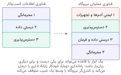
business IT and plant OT side by side (teaching summary)
aspect business IT plant OT
first concern confidentiality safety, then availability
life of a device 3-5 years 15-25 years
change patch on release tested, in an outage window
a reboot means a short pause a stop or a protection gap
a failure hurts the business people, plant and the grid
traffic varied, people repetitive, machines
the same tool or rule can be right for one and harmful
for the other: an automatic reboot that heals an office
PC can stop the plant controller in the middle of a
ramp; OT security starts from safety and availabilityایده. فناوریِ اطلاعاتِ کسبوکار، یعنی رایانههای اداری، ایمیل و سامانههای مالی، پیش از همه نگرانِ محرمانگیِ داده است. فناوریِ عملیاتی، یعنی کنترلگرها، رلهها، اسکادا و هر دستگاهی که تجهیزِ فیزیکی را میگرداند، نگرانِ ایمنیِ آدمها و تجهیزات است و سپس دسترسپذیری. دستگاهِ عملیاتی ۱۵ تا ۲۵ سال کار میکند، نه سه تا پنج سال. تغییرش آزموده و در پنجرهٔ توقف انجام میشود، نه همان روزِ انتشارِ وصله. یک راهاندازیِ دوبارهٔ ساده در اداره مکثی کوتاه است. در نیروگاه ممکن است توقف یا شکافی در حفاظت باشد. پس ابزارها و قاعدههای فناوریِ اطلاعات بیسنجش به فناوریِ عملیاتی برده نمیشوند. امنیتِ فناوریِ عملیاتی از ایمنی و دسترسپذیری آغاز میشود.
36.2.2 چه چیزی در خطر است
what there is to protect at Plant P and what its loss costs (teaching)
system at stake cost of a loss
protection relays safety, equipment none: they trip alone
plant controller compliance, energy 842 u an hour at 50 % fallback
SCADA servers sight, command no view; the PPC runs on
historian evidence, warranty a hole in the record
fire interface life safety the panel works alone
CMMS, reports business late work orders
mean export 33.7 MWh an hour at 50 u/MWh: the money is in
availability; the protection relays and the fire panel
are designed to stay safe whatever happens to the networkمثال 36.1 (پول در دسترسپذیری است) پرسش. اگر کنترلگرِ نیروگاه از دست برود و نیروگاه به حالتِ پشتیبانِ ثابتِ پنجاه درصد برود، هر ساعت چقدر هزینه دارد؟ کدام سامانهها بیشبکه هم ایمن میمانند؟ (دادههای آموزشی، A-408، قیمتِ آموزشیِ فصلِ ۱۶.)
پاسخ. میانگینِ صادرات 33.7 MWh در ساعت است. نیمی از آن با 50 u/MWh حدودِ 842 u در ساعت میشود. رلههای حفاظتی و تابلوی حریق بیشبکه کار میکنند. حفاظت در هر رله محلی است (فصلِ ۲۶) و تابلوی حریق اختیارِ خودش را دارد (فصلِ ۳۵).
تفسیر. آنچه امنیتِ نیروگاه نگه میدارد بیشتر دسترسپذیری است تا محرمانگی. طراحیِ نیروگاه از پیش طوری است که ایمنی به شبکه وابسته نباشد. این نخستین و مهمترین کنترلِ امنیتی است. وارسی: \(295\,100/8760 = 33.7\) و \(33.7 \times 0.5 \times 50 = 842\).
36.2.3 ریسک: احتمال ضربدر پیامد
ایده. ریسکِ هر سناریو با دو مقیاسِ آموزشیِ یک تا پنج سنجیده میشود:
\[ R = L \times C \tag{36.1}\]
در این رابطه \(L\) احتمال و \(C\) پیامد است. امتیازِ ۱۵ به بالا «بسیار بالا»، ۱۰ تا ۱۴ «بالا»، ۵ تا ۹ «میانه» و زیرِ ۵ «پایین» است. این باندها آموزشیاند. هر نیروگاهِ واقعی روشِ ریسکِ خودش را دارد و ارزیابیِ ریسکِ طراحی ناحیهها و هدفهایشان را تعیین میکند (STD-157).
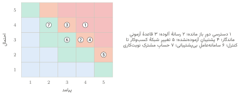
teaching risk register (likelihood x consequence, 1-5 each)
scenario L C score band
vendor remote access left open after support 4 4 16 very high
infected removable media on an engineering laptop 3 4 12 high
firewall rule added for a test and never removed 4 3 12 high
backups exist but were never restored 3 4 12 high
business network change reaches the control zone 2 5 10 high
unsupported operating system on the historian 3 3 9 medium
operator account shared by the shift 4 2 8 medium
5 of 7 scenarios high or very high
the scenarios are generic and defensive: each names a
weakness a design or a procedure can remove, never a
method of attack; the scales and bands are teaching
values, set for a real plant in its own risk methodمثال 36.2 (راهِ دورِ باز مانده) پرسش. دفترِ ریسکِ آموزشیِ نیروگاهِ P هفت سناریو دارد. کدام بالاترین امتیاز را دارد؟ چند سناریو «بالا» یا «بسیار بالا» هستند؟
پاسخ. دسترسیِ دورِ سازنده که پس از پشتیبانی باز مانده، با \(4 \times 4 = 16\) «بسیار بالا» است. پنج سناریو از هفت «بالا» یا «بسیار بالا» هستند.
تفسیر. هر سناریو یک ضعف را نام میبرد که طراحی یا روال میتواند آن را بردارد، هرگز روشِ حمله را. راهِ دوری که فقط با درخواست باز میشود (بخش 36.3.4)، قاعدهٔ آزمونیای که در بازبینی پیدا میشود (بخش 36.3.2) و پشتیبانی که آزموده میشود (بخش 36.4.3) سه ریسکِ بالای جدول را پایین میآورند. وارسی: کمترین امتیاز، حسابِ مشترک، \(4 \times 2 = 8\) و «میانه» است.
36.2.4 چرخهٔ عمرِ امنیت
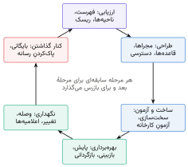
the security life cycle of the control system (teaching)
phase evidence it leaves
assess inventory, zones, risk register
design conduits, rules, access, backups, logging
build and test hardening, factory and site security tests
operate monitoring, access reviews, restore tests
maintain patches, changes, supplier notices
retire data archived, media wiped, accounts closed
security is a property of the whole life, not of the day
of commissioning: each phase leaves records that the next
one, and an auditor, can read (asset owner programme,
STD-156)ایده. امنیت ویژگیِ کلِ عمر است، نه روزِ راهاندازی. ارزیابی فهرستِ داراییها، ناحیهها و دفترِ ریسک را میسازد. طراحی مجراها، قاعدهها، دسترسی، پشتیبانها و ثبتِ سابقه را تعیین میکند. ساخت و آزمون سختسازی و آزمونهای امنیتیِ کارخانه و ساختگاه را دارد. بهرهبرداری پایش، بازبینیِ دسترسی و آزمونِ بازگردانی را. نگهداری وصله، تغییر و اعلامیههای سازنده را. کنار گذاشتن هم بایگانیِ داده، پاککردنِ رسانه و بستنِ حسابها را. این چرخه را برنامهٔ امنیتِ مالکِ دارایی سامان میدهد (STD-156). در سویِ کسبوکار، سامانهٔ مدیریتِ امنیتِ اطلاعاتِ مالک همین نقش را دارد (STD-164).
36.2.5 چه کسی چه میکند
who does what (teaching)
role share does
asset owner accountable decides risk, funds controls
OT security lead responsible programme, reviews, incidents
control engineer responsible configurations, backups, changes
IT team consulted business network, identity services
operators informed / act report anomalies, follow procedures
vendors, integrators responsible for their access and products
physical security consulted doors, cabinets, visitors (ch 32)
one named person owns each control; the interfaces with
IT and physical security are written down with escalation
paths, so nothing falls between two teamsایده. مالکِ دارایی پاسخگوست: ریسک را میپذیرد یا کنترل را میخرد. مسئولِ امنیتِ فناوریِ عملیاتی برنامه، بازبینیها و رخدادها را میگرداند. مهندسِ کنترل پیکربندیها، پشتیبانها و تغییرها را. گروهِ فناوریِ اطلاعات شبکهٔ کسبوکار و خدماتِ هویت را. اپراتورها ناهنجاری را گزارش میکنند. سازندگان و یکپارچهسازها مسئولِ دسترسی و محصولِ خودشان هستند (STD-161). حراست درها، تابلوها و بازدیدکنندگان را دارد (فصلِ ۳۲). هر کنترل یک مالکِ نامدار دارد و واسطها با فناوریِ اطلاعات و حراست با مسیرِ ارجاع نوشته میشوند (بخش 36.3.10).
36.2.6 مرزهای اعتماد
trust boundaries of the logical diagram (ch 35)
zones: 8; conduits crossing a boundary: 8
conduits into the control zone: 5
field-ied -> control telecontrol measurements, events
field-wtg -> control turbine-data turbine data
field-pv -> control inverter-data inverter data
field-bes -> control battery-data battery data
dmz -> control jump-session supervised support
every arrow into the control zone is a door: each has a
purpose, an owner and a rule; the fewer doors, the fewer
things to watch - the business zone has noneایده. نمودارِ منطقیِ فصلِ ۳۵ هشت ناحیه دارد. پنج مجرا به ناحیهٔ کنترل وارد میشوند: چهار از ناحیههای میدانی و یکی، جلسهٔ نظارتشده، از ناحیهٔ میانی. هر پیکان به ناحیهٔ کنترل یک در است. هر در هدف، مالک و یک قاعده دارد. درهای کمتر یعنی چیزهای کمتری برای پاییدن. شبکهٔ کسبوکار هیچ دری به ناحیهٔ کنترل ندارد. وارسی: \(8 - 3 = 5\)؛ سه مجرای دیگر به ناحیهٔ میانی میروند.
- ترتیبِ نگرانیها در فناوریِ اطلاعات و فناوریِ عملیاتی چه فرقی دارد؟
- چرا ابزارهای فناوریِ اطلاعات بیسنجش به نیروگاه برده نمیشوند؟
- کدام سامانههای نیروگاه بیشبکه هم ایمن میمانند و چرا؟
- معادلهٔ 36.1 را توضیح دهید و بگویید باندها از کجا میآیند.
- چرا سناریوهای دفترِ ریسک ضعف را نام میبرند، نه روشِ حمله را؟
- شش مرحلهٔ چرخهٔ عمرِ امنیت و سابقهٔ هر کدام را بگویید.
- نقشِ مالکِ دارایی و مسئولِ امنیت چه فرقی دارد؟
- چند مجرا به ناحیهٔ کنترل میرسد و چرا کمتر بهتر است؟
36.2.7 کارکردهایی که به شبکه وابسته نیستند
which functions depend on the network (teaching)
function done by network?
protection trips relays, hard-wired to breakers no
emergency stop of a turbine hard-wired safety chain no
fire alarm and its actions fire panel (ch 32, 35) no
battery shut-down on fault BMS and its own contactors no
overspeed of a rotor turbine safety system no
plant set points PPC over the network yes
every function that keeps people and equipment safe works
without the network; only optimisation and sight do not.
This independence, designed in chapters 26, 32 and 34, is
the strongest security control of the plantایده. فهرستِ کارکردهای نیروگاه با یک پرسش بازبینی میشود: اگر شبکه نباشد، این کارکرد کار میکند؟ قطعِ حفاظتی در رلهها و با سیم به کلید است. توقفِ اضطراریِ توربین زنجیرهٔ ایمنیِ سیمکشیشده دارد. هشدارِ حریق و اقدامهایش در تابلوی حریق است. خاموش کردنِ باتری در خطا با سامانهٔ مدیریتِ باتری و کنتاکتورهای خودش است. حفاظتِ دورِ اضافهٔ روتور در سامانهٔ ایمنیِ توربین است. فقط نقطههای تنظیمِ نیروگاه از شبکه میگذرند. هر کارکردی که آدمها و تجهیزات را ایمن نگه میدارد بیشبکه کار میکند. فقط بهینهسازی و دیدن به شبکه نیاز دارند. این استقلال، که در فصلهای ۲۶، ۳۲ و ۳۴ طراحی شد، قویترین کنترلِ امنیتیِ نیروگاه است (بخش 36.2.2).
36.2.8 زیانِ موردِ انتظارِ سالانه
expected yearly loss before and after a control (teaching, u)
scenario before after saved control worth?
open vendor path misused 20,000 4,000 16,000 15,000 yes
backup fails when needed 7,500 1,500 6,000 8,000 no
test rule left open 8,000 2,000 6,000 2,000 yes
expected loss = loss of one event x its chance a year; on
this sum alone 2 of 3 controls pay for themselves - the
backup test does not, yet it is kept: it also shortens
every recovery and is the only proof a backup works. The
chances are teaching guesses: the sum guides, it does not
decide on its ownمثال 36.3 (آزمونی که خودش را نمیپردازد، ولی میماند) پرسش. زیانِ موردِ انتظار برابرِ زیانِ یک رخداد ضربدر احتمالِ سالانهٔ آن است. برای سه سناریو، زیانِ موردِ انتظار پیش و پس از کنترل و هزینهٔ کنترل داده شده است. کدام کنترلها هزینهٔ خودشان را میپردازند؟ (عددهای آموزشی، A-408.)
پاسخ. بستنِ راهِ دورِ سازنده با هزینهٔ 15,000 u زیانِ موردِ انتظار را 16,000 u کم میکند. بازبینیِ قاعدهها با 2,000 u زیان را 6,000 u کم میکند. هر دو میارزند. آزمونِ پشتیبان 8,000 u هزینه دارد و زیان را 6,000 u کم میکند، پس بر این پایه نمیارزد.
تفسیر. آزمونِ پشتیبان با این همه نگه داشته میشود. هر بازیابی را کوتاه میکند (بخش 36.4.2) و تنها شاهدِ کار کردنِ پشتیبان است. احتمالها حدسهای آموزشیاند. جمع راهنمایی میکند ولی بهتنهایی تصمیم نمیگیرد. دفترِ ریسک (بخش 36.2.3) و پذیرشِ کتبیِ مالک تصمیم میگیرند. وارسی: \(150\,000 \times (0.05 - 0.01) = 6000\).
- کدام کارکردهای نیروگاه بیشبکه کار میکنند و چرا این مهم است؟
- زیانِ موردِ انتظار چگونه حساب میشود؟
- چرا کنترلی که بر پایهٔ زیانِ موردِ انتظار نمیارزد ممکن است نگه داشته شود؟
36.3 ب. معماریِ دفاعی
معماریِ دفاعی از نمودارِ منطقیِ فصلِ ۳۵ آغاز میشود و آن را به ناحیهها، مجراها، قاعدهها، حسابها، راهِ دسترسیِ دور، ثبتِ سابقه و ساعتها تبدیل میکند. هر بخش اینجا یک پرسش دارد: چه کسی یا چه چیزی، از کدام راه، برای چه هدفی، و چگونه بعداً میفهمیم چه شد.
36.3.1 ناحیهها و مجراها
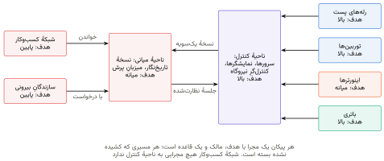
zones of Plant P and their target levels (teaching labels, STD-158 concept)
zone devices target function
field-ied 30 high protection and measurement
field-wtg 24 high turbine control
field-pv 40 medium inverters
field-bes 24 high battery control
control 12 high SCADA servers, HMIs, PPC
dmz 3 medium historian copy, patch store, jump host
business 200 low office, CMMS, reports
remote 0 low vendors and grid operator outside
a zone groups devices that share a function and a need for
protection; a conduit is the one controlled way between
two zones (lesson A); the target level says how hard
the zone must be to reach - it is decided by the risk
assessment of the design (STD-157), not by habitایده. ناحیهٔ امنیتی دستگاههایی را گرد میآورد که کارکرد و نیاز به حفاظتِ مشترک دارند. مجرا تنها راهِ کنترلشدهٔ میانِ دو ناحیه است. ناحیهٔ میانی میانِ ناحیهٔ کنترل و هر چیزِ بیرونی مینشیند. نسخهٔ تاریخنگار، فروشگاهِ وصلهها و میزبانِ پرش آنجا هستند، تا هیچ راهِ بیرونی مستقیم به ناحیهٔ کنترل نرسد. سطحِ هدفِ هر ناحیه میگوید رسیدن به آن چقدر باید دشوار باشد. این مفهوم از سری IEC 62443 میآید (STD-158). برچسبهای «بالا، میانه، پایین» اینجا آموزشیاند و سطحِ واقعی را ارزیابیِ ریسکِ طراحی تعیین میکند (STD-157).
36.3.2 بازبینیِ قاعدههای دیوارهٔ آتش
ایده. دیوارهٔ آتشِ میانِ ناحیهها قاعدهها را به ترتیب میخواند و نخستین قاعدهای که بخورد اجرا میشود. بازبینی چهار گونه یافته را جستوجو میکند. همه به همه: قاعدهای که هر مبدأ، هر مقصد یا هر خدمتی را باز میکند. سایهخورده: قاعدهای که قاعدهٔ بالاتری همهٔ موردهایش را پیشتر میگیرد، پس هرگز اجرا نمیشود. بیاستفاده: قاعدهای که در دورهٔ بازبینی هیچ برخوردی نداشته است. بیسند: قاعدهای که هدفِ نوشتهشده ندارد. برنامهٔ بازبینی روی جدولِ ساختگی کار میکند و هرگز به دستگاه وصل نمیشود:
FIELDS = ("src", "dst", "service")
def covers(a: dict, b: dict) -> bool:
"""Rule a matches every packet rule b matches."""
return all(a[f] == ANY or a[f] == b[f] for f in FIELDS)
def review_rules(rules: list[dict]) -> dict[str, list[str]]:
"""Findings of a first-match rule set: any-any, shadowed, unused,
undocumented. Each rule: id, src, dst, service, action, hits, purpose."""
out = {"any-any": [], "shadowed": [], "unused": [], "undocumented": []}
for i, r in enumerate(rules):
if r["action"] == "allow" and sum(r[f] == ANY for f in FIELDS) >= 2:
out["any-any"].append(r["id"])
if any(covers(rules[j], r) for j in range(i)):
out["shadowed"].append(r["id"])
if r["hits"] == 0:
out["unused"].append(r["id"])
if not r.get("purpose"):
out["undocumented"].append(r["id"])
return outreview of the zone firewall rules (synthetic, first match wins)
rule src dst service action hits
R01 control dmz historian-copy allow 600,000
R02 business dmz historian-read allow 4,200
R03 remote dmz remote-session allow 6
R04 dmz control jump-session allow 6
R05 any any any allow 50,414
R06 business control file-share allow 14
R07 remote control remote-session allow 0
R08 any any any deny 0
any-any : R05
shadowed : R06, R07, R08
unused : R07, R08
undocumented : R05
R05 allows everything and hides every rule after it,
including the default deny; R06 is a commissioning rule
that outlived its purpose; R07 has never matched. The fix
is the conduit table: one allow rule a conduit, a
purpose and an owner on each, default deny last, and a
review of hits and purposes every quarterمثال 36.4 (یک قاعده که همه را پنهان میکند) پرسش. مجموعهٔ ساختگیِ هشت قاعده را بازبینی کنید. کدام قاعدهها یافته دارند و درمان چیست؟ (دادهٔ ساختگی، A-402.)
پاسخ. R05 همه چیز را از هر جا به هر جا باز میکند و هدفی ندارد. R06، R07 و حتی R08 (بستنِ پیشفرض) را پنهان میکند. R06 قاعدهٔ راهاندازی است که پس از هدفش مانده است. R07 و R08 هیچ برخوردی نداشتهاند.
تفسیر. درمان جدولِ مجراهاست (بخش 36.2.6): یک قاعدهٔ اجازه برای هر مجرا با هدف و مالک، بستنِ پیشفرض در پایان، و بازبینیِ برخوردها و هدفها هر سه ماه. قاعدهٔ «موقت» تاریخِ پایان دارد. وارسی: R05 هر سه فیلدش «any» است، پس هر قاعدهٔ پس از خودش را میپوشاند.
36.3.3 ماتریسِ دسترسی
access matrix review (synthetic accounts)
rights beyond the role:
op-2 operator extra: settings
ven-1 vendor extra: software
unused for more than 90 days: ven-1
shared accounts: shared-hmi
each finding is a door left open by habit: an operator
who once needed settings, a vendor who loaded software
in commissioning, a shift login nobody owns. Rights are
reviewed against roles every quarter, unused accounts
closed, and shared logins replaced by named onesایده. هر حساب به یک نقش بسته است و هر نقش مجموعهٔ حقهای مجازِ خودش را دارد (بخش 35.4.6). بازبینی سه چیز را پیدا میکند. اول، حقهای بیش از نقش: اپراتوری که روزی تنظیم لازم داشته و سازندهای که در راهاندازی نرمافزار بارگذاری کرده است. دوم، حسابِ بیش از نود روز بیاستفاده. سوم، حسابِ مشترکِ نوبتکاری که کسی مالکش نیست. هر یافته دری است که از روی عادت باز مانده است. حقها هر سه ماه با نقشها مقایسه میشوند. حسابِ بیاستفاده بسته و حسابِ مشترک با حسابهای نامدار جایگزین میشود. وارسی: از شش حساب، دو حقِ اضافه دارند، یکی بیاستفاده و یکی مشترک است.
36.3.4 دسترسیِ دور با درخواست
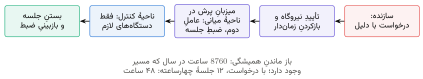
vendor remote access: always open or opened on request (teaching)
always open: 8,760 h a year that the path exists
on request, 12 sessions of 4 h: 48 h a year
exposure cut by 99.5 %
a session on request: asked for with a reason, approved by
the plant, through the jump host in the DMZ, with a second
factor, watched or recorded, closed at the end - the path
does not exist the rest of the yearایده. سازندهها گاهی باید از دور کمک کنند. راهی که همیشه باز است ۸۷۶۰ ساعت در سال وجود دارد. راهی که فقط با درخواست باز میشود، با دوازده جلسهٔ چهارساعته، ۴۸ ساعت وجود دارد: 99.5 % کمتر. هر جلسه با دلیل درخواست و با تأییدِ نیروگاه باز میشود. از میزبانِ پرش در ناحیهٔ میانی میگذرد، با عاملِ دوم برای ورود، و ضبط یا نظارت میشود. فقط به دستگاههای لازم میرسد و در پایان بسته میشود. ضبطِ هر جلسه بازبینی میشود (بخش 36.3.15). وارسی: \(1 - 48/8760 = 0.9945\).
36.3.5 ثبتِ سابقه
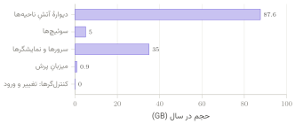
security logs kept for a year (teaching volumes)
source devices events/day each GB/year
zone firewalls 2 400,000 87.6
switches 34 2,000 5.0
servers and HMIs 12 20,000 35.0
jump host 1 5,000 0.9
controllers: changes, logins 3 50 0.0
total about 129 GB a year
the controllers write few events, and each one matters:
a configuration change or a login on a plant controller
is read by a person the same day; the firewall's many
events are searched when a question is askedایده. حجمِ سابقهها با رابطهٔ سادهای حساب میشود: رخدادها در روز ضربدر اندازهٔ هر رخداد ضربدر روزهای نگهداری. با عددهای آموزشی، سابقههای یک سال حدودِ 129 GB است و بیشترش از دیوارهٔ آتش میآید. کنترلگرها رخدادهای کمی مینویسند و هر کدام مهم است. تغییرِ پیکربندی یا ورود به کنترلگرِ نیروگاه همان روز به دستِ یک آدم خوانده میشود. رخدادهای فراوانِ دیوارهٔ آتش وقتی جستوجو میشوند که پرسشی پیش بیاید (بخش 36.3.14). وارسی: \(2 \times 400\,000 \times 300 \times 365 = 87.6\,\text{GB}\).
36.3.6 ساعتهایی که سابقهها را مقایسهپذیر میکنند
comparing logs from two devices (teaching)
an unsynchronised clock at 20 ppm drifts 52 s in 30 days
a login on the jump host and a change on a controller then
appear in the wrong order, or a minute apart when they were
seconds apart; every device that logs takes its time from
the plant's clocks (ch 35), and the log keeps the time baseایده. برای فهمیدنِ اینکه چه رخ داد، سابقههای چند دستگاه کنارِ هم گذاشته میشوند. ساعتِ ناهمگام با بیست میلیونیم یک دقیقه در ماه رانش دارد. ورود به میزبانِ پرش و تغییر در کنترلگر ممکن است با ترتیبِ نادرست یا با یک دقیقه فاصله دیده شوند، در حالی که چند ثانیه از هم دور بودهاند. پس هر دستگاهی که سابقه مینویسد زمانش را از ساعتهای نیروگاه میگیرد (بخش 35.2.9) و سابقه پایهٔ زمانیاش را نگه میدارد (بخش 35.7.5). وارسی: \(20 \times 10^{-6} \times 30 \times 86\,400 = 52\,\text{s}\).
36.3.7 قوتِ رازها
ایده. قوتِ رازی که تصادفی انتخاب شده با شمارِ بیتهایش سنجیده میشود:
\[ H = n \log_2 A \tag{36.2}\]
در این رابطه \(n\) طولِ راز و \(A\) اندازهٔ الفبای آن است. هر بیت شمارِ حدسهای لازم را دو برابر میکند.
strength of a secret chosen at random (bits; defensive sizing)
secret bits
factory default, published 0 (known)
8 lower-case letters 38
12 letters and digits 71
random 128-bit key 128
a default password has no strength at all, however long;
every device gets its own secret at commissioning, kept in
a managed vault, and machines use keys or certificates
rather than passwords where the device supports themایده. گذرواژهٔ پیشفرضِ کارخانه، که در دفترچه منتشر شده است، هیچ قوتی ندارد، هر قدر هم بلند باشد. هر دستگاه در راهاندازی رازِ خودش را میگیرد. رازها در یک گاوصندوقِ مدیریتشده نگه داشته میشوند. ماشینها هرجا که دستگاه پشتیبانی کند، به جای گذرواژه کلید یا گواهی به کار میبرند (بخش 36.3.16). این بخش فقط اندازهٔ دفاعی را میدهد و هیچ روشی برای آزمودنِ رازِ دیگران ندارد. وارسی: \(12 \log_2 62 = 71.5\) بیت.
36.3.8 سختسازی
hardening checklist of the 28 networked devices (synthetic FAT result)
item done of
default accounts removed or renamed 26 28
unused services switched off 22 28
unused ports disabled 25 28
configuration fingerprint recorded 28 28
time from the plant clocks 27 28
12 open items go to the punch list of the factory test
and are closed before shipment; the checklist is part of
the configuration baseline of ch 35, so a replaced device
is hardened the same wayایده. سختسازی هر دستگاه را به کمترین چیزی میرساند که کارش لازم دارد. حسابهای پیشفرض برداشته یا تغییرِ نام داده میشوند. خدمتها و درگاههای بیاستفاده خاموش میشوند. اثرانگشتِ پیکربندی ثبت میشود و زمان از ساعتهای نیروگاه میآید. در آزمونِ کارخانهٔ ساختگی، ۱۲ قلمِ باز به فهرستِ نواقص میرود و پیش از ارسال بسته میشود. فهرستِ وارسی بخشی از خطمبنای پیکربندیِ فصلِ ۳۵ است (بخش 35.8.1)، پس دستگاهِ جایگزین هم به همان شکل سخت میشود. تواناییهای امنیتیِ هر دستگاه از سازنده خواسته میشود (STD-160). وارسی: \(2 + 6 + 3 + 0 + 1 = 12\).
36.3.9 جفتِ دیوارهٔ آتش و نقطههای تکِ خرابی
path from the control zone to the DMZ (teaching availabilities)
with one firewall: A = 0.999300, 6.1 h a year
with a firewall pair: A = 0.999800, 1.8 h a year
single points of failure with one firewall: firewall, control-zone switch
the DMZ path carries historian copies and supervised support,
not control: the plant runs if it fails - which is why a
single firewall may be accepted here, while the paths
inside the control zone are redundantایده. راهِ ناحیهٔ کنترل به ناحیهٔ میانی از یک سوئیچِ ناحیهٔ کنترل، جفتِ سوئیچِ هسته و دیوارهٔ آتش میگذرد. با یک دیوارهٔ آتش، این راه حدودِ شش ساعت در سال قطع است. با یک جفت، کمتر از دو ساعت. ولی این راه نسخهٔ تاریخنگار و جلسههای نظارتشده را میبرد، نه کنترل را. نیروگاه بیآن کار میکند. پس یک دیوارهٔ آتشِ تنها اینجا ممکن است پذیرفته شود. راههای درونِ ناحیهٔ کنترل افزونهاند. افزونگی جایی خرج میشود که دسترسپذیری لازم دارد، نه همهجا (بخش 36.5.2). وارسی: \((1 - 0.9993) \times 8760 = 6.1\) ساعت.
36.3.10 جایی که امنیتِ سایبری و فیزیکی به هم میرسند
where cyber and physical security meet (teaching interface table)
event first owner informs
control-room door forced site security OT lead
cabinet door open, no work order operator site security
console login at night, no permit OT lead site security
unknown device on a switch port OT lead control engineer
USB device refused at an HMI operator OT lead
each event has an owner and a path to the other team;
this table does not replace the site's physical-security
assessment (ch 32) - it only joins the twoایده. بعضی رخدادها هم سایبریاند و هم فیزیکی. درِ تابلویی که بیدستورِ کار باز شده است. ورود به کنسولِ تابلو در شب بیمجوز. دستگاهِ ناشناسی که به درگاهِ سوئیچ وصل شده است. هر رخداد یک مالکِ نخست و یک مسیر به گروهِ دیگر دارد. این جدول جای ارزیابیِ امنیتِ فیزیکیِ ساختگاه را نمیگیرد (فصلِ ۳۲، U-117). فقط دو گروه را به هم وصل میکند و هیچ جزئیاتِ تاکتیکیِ حفاظتِ فیزیکی ندارد.
- ناحیه، مجرا و ناحیهٔ میانی را تعریف کنید.
- سطحِ هدفِ یک ناحیه را چه چیزی تعیین میکند؟
- چهار گونه یافتهٔ بازبینیِ قاعدهها را بگویید.
- چرا قاعدهٔ «همه به همه» بستنِ پیشفرض را بیاثر میکند؟
- سه یافتهٔ ماتریسِ دسترسی را بگویید.
- دسترسیِ دور با درخواست چه مرحلههایی دارد؟
- کدام سابقهها هر روز خوانده میشوند و کدام فقط با پرسش؟
- چرا سابقهها بیساعتِ همگام مقایسهپذیر نیستند؟
- معادلهٔ 36.2 را توضیح دهید و بگویید چرا گذرواژهٔ پیشفرض قوتی ندارد.
- سختسازی چه قلمهایی دارد؟
- چرا یک دیوارهٔ آتشِ تنها ممکن است پذیرفته شود؟
- جدولِ واسطِ امنیتِ سایبری و فیزیکی چه چیزی را نمیگیرد؟
36.3.11 دامنهٔ یک رایانهٔ آلوده
what one compromised office PC could reach (synthetic counts)
flat network: every one of the 130 control and field devices
zones and conduits: none - the business zone has no
conduit into control; it reaches only the historian copy
in the DMZ, read-only
segmentation does not make a device secure; it limits how
far one mistake or one infected machine can spread - the
'reach' of each zone is what the conduit table decidesایده. اگر یک رایانهٔ اداری آلوده شود، در شبکهٔ تخت به هر ۱۳۰ دستگاهِ کنترل و میدان میرسد. با ناحیهها و مجراها، به هیچکدام نمیرسد. فقط نسخهٔ خواندنیِ تاریخنگار را در ناحیهٔ میانی میبیند. بخشبندی دستگاه را امن نمیکند. فقط محدود میکند که یک اشتباه یا یک رایانهٔ آلوده تا کجا پخش شود. دامنهٔ هر ناحیه را جدولِ مجراها تعیین میکند (شکل 36.4). وارسی: \(30 + 24 + 40 + 24 + 12 = 130\).
36.3.12 رسانهٔ جداشدنی
removable media at the HMIs (teaching counts)
6 HMIs, about 20 insertions a month in commissioning
policy: ports blocked on HMIs and servers; files enter
through one scanning station in the DMZ, logged
insertions refused and logged in a month: 20
the refusals are not a nuisance to be switched off; each
is a person who needed a file and now uses the station -
and the log shows when somebody keeps tryingایده. درگاههای رسانهٔ جداشدنی روی نمایشگرها و سرورها بستهاند. پروندهها فقط از یک ایستگاهِ پویش در ناحیهٔ میانی وارد میشوند و هر ورود ثبت میشود. در ماهِ راهاندازی حدودِ بیست تلاشِ ردشده ثبت میشود. این ردها مزاحمتی نیستند که باید خاموش شوند. هر کدام آدمی است که پروندهای لازم داشت و اکنون از ایستگاه استفاده میکند. سابقه نشان میدهد چه وقت کسی بارها تلاش میکند.
36.3.13 پالایشِ هشدارهای امنیتی
alerts of the security monitoring in a month (synthetic)
1,231 alerts, 41 a day on average
if 2 % need action: about 25 a month
at 5 min each, reading all of them takes 103 h a month
alerts are tuned until most of them mean something:
known maintenance is announced to the monitoring, noisy
rules are fixed, and every closed alert says why - the
same discipline as the plant's alarms (ch 35)ایده. پایشِ امنیتی هشدار میسازد، همانطور که اسکادا هشدارِ فرایند میسازد. در یک ماهِ ساختگی 1,231 هشدار میآید. اگر دو درصد اقدام بخواهند، حدودِ ۲۵ هشدار در ماه است. خواندنِ همه با پنج دقیقه برای هر کدام ۱۰۳ ساعت در ماه میگیرد. هشدارها تنظیم میشوند تا بیشترشان معنا داشته باشند. نگهداریِ برنامهریزیشده از پیش به پایش اعلام میشود، قاعدههای پرسروصدا اصلاح میشوند و هر هشدارِ بستهشده دلیلش را میگوید. این همان انضباطِ هشدارهای نیروگاه است (بخش 35.4.2).
36.3.14 چه مدت چیزی دیده نمیشود
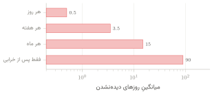
how long an unusual event goes unseen (teaching)
logs read mean days to notice worst days
every day 0.5 1
every week 3.5 7
every month 15.0 30
only after a fault 90.0 180
a log nobody reads protects nobody: the few events that
matter (logins and changes on controllers, new devices,
rule hits on the deny rule) are read every day, by a
named person, and the rest are kept for when a question
is askedایده. سابقهای که کسی نمیخواند از کسی محافظت نمیکند. اگر سابقهها هر روز خوانده شوند، رخدادِ غیرعادی بهطورِ میانگین در نیم روز دیده میشود. اگر هر ماه، در پانزده روز. اگر فقط پس از خرابی، در سه ماه. پس چند رخدادِ مهم، یعنی ورود و تغییر روی کنترلگرها، دستگاهِ تازه و برخورد با قاعدهٔ بستنِ پیشفرض، هر روز به دستِ یک آدمِ نامدار خوانده میشوند. بقیه برای وقتی نگه داشته میشوند که پرسشی پیش بیاید. وارسی: میانگین نیمِ فاصلهٔ خواندن است: \(7/2 = 3.5\).
36.3.15 بازبینیِ جلسههای سازنده
vendor sessions of a quarter (synthetic register)
vendor hours purpose record
V1 3.5 firmware study recorded
V1 2.0 fault analysis recorded
V2 6.0 commissioning help not recorded
V3 1.0 licence renewal recorded
12.5 h in the quarter; one session without a recording
is a finding: the jump host records every session, so a
missing recording means a path around it
the quarterly review matches each session to a request
and a purposeایده. در یک فصلِ ساختگی، چهار جلسهٔ سازنده با روی هم 12.5 ساعت ثبت شده است. یکی ضبط ندارد. این یک یافته است. میزبانِ پرش هر جلسه را ضبط میکند، پس جلسهٔ بیضبط یعنی راهی که میزبان را دور زده است. بازبینیِ فصلی هر جلسه را با یک درخواست و یک هدف مقایسه میکند (بخش 36.3.4).
36.3.16 گواهیهایی که منقضی میشوند
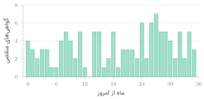
certificates of the control system expiring (synthetic, 120)
in the next 12 months: 37
busiest month: 7 at once
an expired certificate stops a connection as surely as a
cut cable - the historian copy, a gateway, the jump host;
every certificate is in the inventory with its expiry
date and owner, and renewal starts 60 days beforeایده. کلیدها و گواهیها از گذرواژه بهترند، ولی تاریخِ انقضا دارند. گواهیِ منقضیشده یک اتصال را به همان قطعیتِ کابلِ بریده قطع میکند: نسخهٔ تاریخنگار، یک دروازهٔ ارتباطی، میزبانِ پرش. در نمونهٔ ساختگی، ۳۷ گواهی در دوازده ماهِ آینده منقضی میشوند و در شلوغترین ماه هفت تا با هم. هر گواهی با تاریخِ انقضا و مالکش در فهرستِ داراییهاست و تمدیدش شصت روز پیش از انقضا آغاز میشود.
- بخشبندی دامنهٔ یک رایانهٔ آلوده را چگونه تغییر میدهد؟
- پروندهها چگونه به نمایشگرها میرسند؟
- چرا هشدارهای امنیتی پالایش میشوند؟
- خواندنِ روزانهٔ سابقهها زمانِ دیدهنشدن را چقدر کوتاه میکند؟
- جلسهٔ سازندهٔ بیضبط چه معنایی دارد؟
- چرا گواهیها در فهرستِ داراییها با تاریخِ انقضا میآیند؟
36.3.17 لایههای شبکه و جای هر کنترل
the layers of a network and where each control acts (teaching)
layer carries control at this layer
physical cables, fibre, ports locked cabinets, unused ports off
link frames inside a subnet port settings, VLAN per zone
network addresses, routing zone firewall: conduit rules
transport sessions, services only the conduit's service
application protocol and its data protocol-aware gateway, roles
a control at one layer does not see the others: a
firewall that allows a service cannot tell a read from a
write inside it - that is the application's roles; a
VLAN keeps zones apart only if every port is set rightایده. شبکه لایه به لایه کار میکند. لایهٔ فیزیکی کابل و درگاه است. لایهٔ پیوند قابها را درونِ یک زیرشبکه میبرد. لایهٔ شبکه نشانی و مسیریابی است. لایهٔ انتقال جلسهها و خدمتها را دارد و لایهٔ کاربرد خودِ پروتکل و دادهاش را. هر کنترل در یک لایه کار میکند. تابلوی قفلدار و درگاهِ خاموش در لایهٔ فیزیکیاند. شبکهٔ مجازیِ محلی (به انگلیسی VLAN) برای هر ناحیه در لایهٔ پیوند است. قاعدهٔ مجرا در لایهٔ شبکه و انتقال است. دروازهٔ آگاه از پروتکل و نقشها در لایهٔ کاربرد. کنترلِ یک لایه لایههای دیگر را نمیبیند. دیوارهٔ آتشی که خدمتی را اجازه میدهد، خواندن را از نوشتن درونِ آن تشخیص نمیدهد. این کارِ نقشهای کاربرد است (بخش 35.4.6).
36.3.18 حسابهای محلی یا دفترِ هویتِ عملیاتی
accounts on the networked devices: local or from an OT directory
local accounts on each device: 28 x 6 = 168 accounts
one OT directory (not the business one): 6 accounts, 28 devices trusting it
a person leaves: 28 devices to change, or 1 account to close
devices that cannot use the directory keep one local
account each, its secret in the vault, its use logged;
the OT directory is separate from the business one so a
business account problem does not reach the control zoneایده. اگر هر یک از ۲۸ دستگاه برای شش نفر حسابِ محلی داشته باشد، ۱۶۸ حساب هست. وقتی کسی میرود، ۲۸ دستگاه باید تغییر کنند. با یک دفترِ هویتِ عملیاتی، شش حساب هست و بستنِ یک حساب کافی است. این دفتر از دفترِ هویتِ کسبوکار جداست، تا مشکلِ یک حسابِ کسبوکار به ناحیهٔ کنترل نرسد. دستگاهی که نمیتواند از دفتر استفاده کند، یک حسابِ محلی نگه میدارد. رازش در گاوصندوق است و هر بار استفادهاش ثبت میشود (بخش 36.3.7). وارسی: \(28 \times 6 = 168\).
36.3.19 تنظیمِ درگاهها در برابرِ طراحی
port settings against the design (synthetic extract of 6)
switch port design found
SW-R01 1 wtg wtg
SW-R01 2 wtg wtg
SW-R01 9 unused wtg
SW-C01 4 control control
SW-C01 5 bes control
SW-C01 6 unused disabled
2 findings: an unused port left in a working VLAN and a
battery port in the control zone's VLAN - each joins two
zones without a conduit. Port settings are compared with
the design by program at the factory test and after
every changeایده. شبکهٔ مجازیِ محلی ناحیهها را فقط وقتی جدا نگه میدارد که هر درگاه درست تنظیم شده باشد. در برشِ ساختگیِ شش درگاه، دو یافته هست. یک درگاهِ بیاستفاده در شبکهٔ مجازیِ کاری مانده است. یک درگاهِ باتری در شبکهٔ مجازیِ ناحیهٔ کنترل است. هر کدام دو ناحیه را بیمجرا به هم وصل میکند. تنظیمِ درگاهها در آزمونِ کارخانه و پس از هر تغییر با برنامه با طراحی مقایسه میشود، همانطور که فهرستِ برچسبها و طرحِ نشانیها (بخش 35.2.21).
36.3.20 بستنِ خودکارِ جلسهها
vendor sessions left open by mistake (teaching)
48 sessions a year, 1 in 10 not closed by hand
without a timeout, found at the next quarterly review: 5,184 h open
closed automatically after 4 h: 19 h open
a forgotten session is ordinary human error; the jump host
closes every session after its approved time, whatever
the person remembersایده. فراموش کردنِ بستنِ جلسه خطای عادیِ آدم است. اگر از ۴۸ جلسه در سال یکی از ده تا باز بماند و فقط در بازبینیِ سهماهه پیدا شود، روی هم بیش از پنج هزار ساعت راهِ باز هست. اگر میزبانِ پرش هر جلسه را پس از زمانِ تأییدشده ببندد، این عدد نوزده ساعت است. کنترل باید با خطای عادی کار کند، نه با فرضِ اینکه کسی خطا نمیکند. وارسی: \(48 \times 0.1 \times 45 \times 24 = 5184\).
36.3.21 حقِ مدیر فقط هنگامِ نیاز
administrator rights always held or given when needed (teaching)
3 engineers holding rights all year: 26,280 h
rights given for each approved task, 200 h each a year: 600 h
privileged hours cut by 97.7 %
everyday work is done with an everyday account; the
administrator right is asked for, given for the task and
taken back, and each grant is in the logایده. سه مهندس اگر همهٔ سال حقِ مدیر داشته باشند، 26,280 ساعتِ حقِ مدیر هست. اگر این حق برای هر کارِ تأییدشده داده و پس گرفته شود، با دویست ساعت برای هر نفر، ۶۰۰ ساعت. کارِ روزانه با حسابِ روزانه انجام میشود. حقِ مدیر خواسته، برای همان کار داده و پس گرفته میشود و هر بار در سابقه میماند. این همان کمترین دسترسی است (بخش 35.4.6)، در بُعدِ زمان.
36.3.22 افزایشِ برخورد با بستنِ پیشفرض
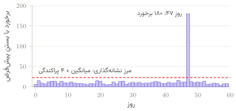
hits on the default-deny rule a day (synthetic two months)
first month: mean 9.7, spread 3.3
days flagged above mean + 4 spreads: [47] (180 hits)
a deny rule that suddenly blocks many times more than
usual says that something is trying a path that does not
exist - a misconfigured new device as often as anything
else; the flagged day is looked at the same day, and the
cause is written in the recordایده. قاعدهٔ بستنِ پیشفرض هر روز چند برخوردِ عادی دارد. اگر روزی چند برابر شود، چیزی راهی را امتحان میکند که وجود ندارد. این چیز به همان اندازه ممکن است یک دستگاهِ تازهٔ بدپیکربندیشده باشد که هر چیزِ دیگری. مرزِ نشانهگذاری از ماهِ نخست ساخته میشود: میانگینِ 9.7 بهعلاوهٔ چهار برابرِ پراکندگیِ 3.3، یعنی حدودِ ۲۳ برخورد. روزِ ۴۷ با ۱۸۰ برخورد همان روز بررسی و علتش ثبت میشود. همان منطقِ هشدارِ اسکادا اینجا روی سابقهها کار میکند (بخش 35.4.2). وارسی: \(9.7 + 4 \times 3.3 = 22.9\).
36.3.23 رایانههای مهندسی
the engineering laptops (3, teaching rules)
rule kept
used only for engineering yes
no e-mail, no web browsing yes
connects only through the jump host or on the bench yes
software and tools from the approved list yes
kept in the control room when not in use yes
backed up like a server yes
the engineering laptop carries the keys to every
controller: it is treated as part of the control zone,
not as an office computer that sometimes visits itایده. لپتاپِ مهندسی کلیدِ همهٔ کنترلگرها را دارد: برنامهها، ابزارهای پیکربندی و دسترسی. پس بخشی از ناحیهٔ کنترل شمرده میشود، نه رایانهٔ اداریای که گاهی به آن سر میزند. فقط برای مهندسی است و ایمیل و مرور وب ندارد. فقط از راهِ میزبانِ پرش یا روی میزِ آزمون وصل میشود. نرمافزارش از فهرستِ تأییدشده است. وقتی به کار نمیرود در اتاقِ کنترل میماند و مانندِ یک سرور پشتیبان میگیرد.
36.3.24 پروتکلهایی که گوینده را ثابت نمیکنند
authentication on each conduit's service (teaching labels)
conduit service authentication
field-ied -> control telecontrol older profile: none
field-wtg -> control turbine-data maker's: none
field-pv -> control inverter-data maker's: none
field-bes -> control battery-data maker's: none
control -> dmz historian-copy authenticated
business -> dmz historian-read authenticated
remote -> dmz remote-session authenticated, 2nd factor
dmz -> control jump-session authenticated
4 of 8 conduits carry field protocols that do not
prove who is speaking: they stay inside their zone and its
conduit, behind a gateway; secure profiles (STD-163) are
asked for in new purchases and enabled where devices
support them - never assumedایده. چهار مجرا از هشت مجرا پروتکلهای میدانیای دارند که ثابت نمیکنند چه کسی حرف میزند. پروفایلهای قدیمیِ دورکنترل و پروتکلهای سازندهها چنیناند. این پروتکلها درونِ ناحیهٔ خودشان و مجرایشان، پشتِ دروازهٔ ارتباطی، میمانند. پروفایلهای امن (STD-163) در خریدهای تازه خواسته و هرجا دستگاه پشتیبانی کند فعال میشوند. هرگز فرض نمیشود که فعالاند. این همان دلیلی است که ناحیهها ساخته میشوند: آنچه خودش نمیتواند از خودش دفاع کند، جایی مینشیند که کمتر کسی به آن برسد.
36.3.25 بیسیم در نیروگاه
wireless in the plant (teaching rules)
user network for
maintenance tablets business Wi-Fi reports, orders
met mast radio (ch 35) own encrypted link field data
nacelle service Wi-Fi off unless a permit maker's tools
control zone no wireless at all -
a radio reaches past fences and walls: the control zone
has none, a radio link that carries field data is its own
encrypted conduit, and a maker's service Wi-Fi is
switched on for the permit and off again after itایده. رادیو از نرده و دیوار میگذرد. پس ناحیهٔ کنترل هیچ بیسیمی ندارد. تبلتهای نگهداری روی شبکهٔ بیسیمِ کسبوکارند و فقط گزارشها و دستورهای کار را میخوانند. پیوندِ رادیوییِ دکلِ هواشناسی (بخش 35.2.18) خودش یک مجرای رمزشده است و فقط دادهٔ میدان را میبرد. شبکهٔ بیسیمِ خدمتِ سازنده در نَسِل فقط با مجوزِ کار روشن و پس از آن خاموش میشود.
36.3.26 پایانِ قراردادِ یک سازنده
a vendor's contract ends: closing its access (teaching)
step hours
vendor accounts disabled 0.5
jump-host approvals removed 0.2
data transfers returned or deleted, confirmed 2.0
keys and certificates issued to the vendor revoked 1.0
tools and laptops returned, media wiped 1.0
conduit table and access matrix updated 0.5
5.2 h of work on one day, from one checklist; a right
nobody remembers to close outlives the contract by yearsایده. وقتی قراردادِ یک سازنده تمام میشود، دسترسیهایش با یک فهرستِ وارسی بسته میشوند. حسابها غیرفعال میشوند و تأییدهای میزبانِ پرش برداشته میشوند. دادههای فرستادهشده برگردانده یا پاک میشوند و پاک شدن تأیید میشود. کلیدها و گواهیهای او باطل میشوند. ابزارها و لپتاپها برگردانده و رسانهها پاک میشوند. جدولِ مجراها و ماتریسِ دسترسی هم بهروز میشوند. روی هم حدودِ پنج ساعت کار در یک روز است. حقی که کسی به یاد نیاورد ببندد، سالها پس از قرارداد زنده میماند (بخش 36.7.7). وارسی: \(0.5 + 0.2 + 2 + 1 + 1 + 0.5 = 5.2\).
- هر لایهٔ شبکه چه چیزی را میبرد و کدام کنترل در آن کار میکند؟
- چرا دیوارهٔ آتش خواندن را از نوشتن تشخیص نمیدهد؟
- دفترِ هویتِ عملیاتی چه چیزی را آسان میکند و چرا از دفترِ کسبوکار جداست؟
- دو یافتهٔ تنظیمِ درگاهها چه چیزی را به هم وصل میکنند؟
- چرا بستنِ جلسه خودکار است؟
- حقِ مدیر فقط هنگامِ نیاز چگونه کار میکند؟
- مرزِ نشانهگذاریِ برخوردها چگونه ساخته میشود؟
36.4 پ. تابآوری و پاسخ
هیچ دفاعی کامل نیست. تابآوری یعنی بدانیم چه داریم، بتوانیم آن را دوباره بسازیم، وصلهها و تغییرها را بیآسیب انجام دهیم، و وقتی چیزی رخ داد بدانیم چه کسی چه میکند. همهٔ اینها با سابقه ثابت میشوند، نه با فرض.
36.4.1 فهرستِ داراییها
the asset inventory checked for gaps (synthetic extract of 10)
field rows missing it
owner 2
firmware 1
support_end 1
rows with a gap: SW-R02, SRV-1, HIS-1, GPS-1
support ends by 2028: GPS-1, JMP-1
an inventory without an owner has nobody to patch it, one
without a firmware version cannot be checked against a
maker's notice, and one without an end of support date
hides the next replacement; the inventory is the first
control, because every other one needs itایده. فهرستِ داراییها نخستین کنترل است، چون هر کنترلِ دیگری به آن نیاز دارد. هر سطر یک مالک، یک نسخهٔ میانافزار، یک ناحیه و یک تاریخِ پایانِ پشتیبانی دارد. در برشِ ساختگیِ دهسطری، چهار سطر شکاف دارند. دو سطر مالک ندارند، یکی نسخهٔ میانافزار ندارد و یکی تاریخِ پایانِ پشتیبانی. دستگاهی که مالک ندارد کسی را ندارد که وصلهاش کند. دستگاهی که نسخه ندارد با اعلامیهٔ سازنده سنجیده نمیشود. دستگاهی که تاریخِ پایانِ پشتیبانی ندارد جایگزینیِ بعدی را پنهان میکند. پشتیبانیِ دو دستگاه تا سالِ ۲۰۲۸ تمام میشود و جایگزینیشان از امروز برنامهریزی میشود (بخش 36.4.8). وارسی: \(2 + 1 + 1 = 4\) شکاف در چهار سطرِ جدا.
36.4.2 زمانِ بازیابیِ هر سامانه
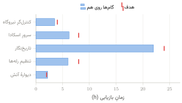
recovery time of each system against its target (teaching steps, h)
system steps h target h meets?
plant controller 3.5 4.0 yes
SCADA server 6.2 8.0 yes
historian 22.0 24.0 yes
protection relay settings 6.0 8.0 yes
firewall 2.2 2.0 NO
misses: firewall - by minutes; a configured spare on the
shelf removes the gap
the historian meets its target only just (22 of 24 h):
12 h of it is restoring data; a standby copy in the DMZ
(ch 35) would shorten it
recovery times are measured in a restore test, not only
added up on paperمثال 36.5 (دوازده دقیقه بیشتر) پرسش. زمانِ بازیابیِ هر سامانه جمعِ گامهای آن است: آشکارسازی، یدکی، بارگذاریِ پیکربندی، بازگرداندنِ داده و وارسی. کدام سامانه از هدفش بیشتر میشود؟ کدام فقط بهزحمت به هدف میرسد؟ (گامهای آموزشی، A-405.)
پاسخ. دیوارهٔ آتش 2.2 h میگیرد، دوازده دقیقه بیش از هدفِ 2 h. تاریخنگار 22 از 24 ساعت میگیرد و دوازده ساعتش بازگرداندنِ داده است.
تفسیر. یک یدکیِ پیکربندیشده روی قفسه شکافِ دیوارهٔ آتش را برمیدارد. یک نسخهٔ آماده در ناحیهٔ میانی زمانِ تاریخنگار را کوتاه میکند (بخش 35.4.14). زمانهای بازیابی در آزمونِ بازگردانی اندازه گرفته میشوند، نه فقط روی کاغذ جمع زده. وارسی: \(0.2 + 0.5 + 0.5 + 1.0 = 2.2\).
36.4.3 هر چند وقت بازگردانی آزموده شود
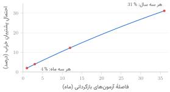
how often to test a restore (teaching: 2 % a month a backup breaks silently)
test every chance the latest backup is broken when needed
1 months 2.0 %
3 months 4.0 %
12 months 12.3 %
36 months 31.2 %
a backup that was never restored is a hope, not a
control; a quarterly restore on a test bench keeps the
chance of finding a broken one in an emergency small,
and each test is recorded with its time (lesson C)ایده. پشتیبانی که هرگز بازگردانی نشده امید است، نه کنترل. اگر هر ماه دو درصد احتمال باشد که پشتیبان بیصدا خراب شود، آزمونِ ماهانه احتمالِ پشتیبانِ خراب در لحظهٔ نیاز را دو درصد نگه میدارد. آزمونِ سالانه دوازده درصد و آزمونِ سهساله سیویک درصد. بازگردانیِ سهماهه روی میزِ آزمون این احتمال را حدودِ چهار درصد نگه میدارد. هر آزمون با زمانش ثبت میشود و همان زمانِ بازیابیِ مثال 36.5 را اندازه میگیرد. وارسی: \(1 - 0.98^{6.5} = 0.123\).
36.4.4 فاصلهٔ وصله تا نصب
ایده. وصلهٔ سازنده نخست روی میزِ آزمون آزموده میشود و سپس در پنجرهٔ توقفِ بعدی نصب میشود. میانگین و بدترین فاصله چنین است:
\[ \begin{aligned} \bar{t}_\text{p} &= t_\text{test} + \frac{T_\text{w}}{2} \\ t_\text{p,max} &= t_\text{test} + T_\text{w} \end{aligned} \tag{36.3}\]
در این رابطه \(t_\text{test}\) زمانِ آزمون و \(T_\text{w}\) فاصلهٔ پنجرههای توقف است.
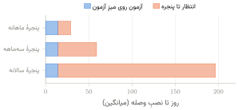
days from a maker's fix to its installation (teaching)
test days window every mean days worst days
14 30 d 29 44
14 90 d 59 104
14 365 d 196 379
plant devices are patched in outage windows after a test
on the test bench; a long gap is covered by compensating
controls (the conduit closed, the service switched off)
and recorded with the risk it leaves - never by patching
a running controller on the day the fix appearsایده. با پنجرهٔ ماهانه، میانگینِ فاصله ۲۹ روز است. با پنجرهٔ سالانه ۱۹۶ روز. فاصلهٔ بلند با کنترلهای جبرانی پوشانده میشود: مجرا بسته یا خدمت خاموش میشود، و ریسکی که میماند ثبت میشود. وصله هرگز روزِ انتشار روی کنترلگرِ در حالِ کار نصب نمیشود. وارسی: \(14 + 30/2 = 29\).
36.4.5 تغییرها و پشتیبانهایشان
changes to the control system in a year (teaching)
60 changes, each with a backup before and after (30 min)
and a test (1.5 h): 120 h of work
each change: request, risk check, approval, backup,
change, test, fingerprint compared, backup, record. An
emergency change follows the same record afterwards; a
change outside this path is itself an incidentایده. هر تغییر در سامانهٔ کنترل یک مسیر دارد: درخواست، وارسیِ ریسک، تأیید، پشتیبانِ پیش، تغییر، آزمون، مقایسهٔ اثرانگشت، پشتیبانِ پس و ثبت (بخش 34.4.5). با شصت تغییر در سال، این حدودِ ۱۲۰ ساعت کار است. تغییرِ اضطراری همین سابقه را پس از انجام میگیرد. تغییری که بیرون از این مسیر انجام شود خودش یک رخداد است و با مقایسهٔ خطمبنا پیدا میشود (بخش 36.6.3).
36.4.6 تمرینِ رومیزی
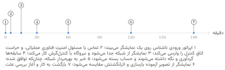
tabletop exercise: an unknown login on an HMI (synthetic)
minute step
0 operator sees an unknown login on an HMI
5 OT lead called; physical security checks the control room
15 the HMI is isolated from the network; the plant runs on the PPC
30 logs collected and kept; the account disabled
60 grid operator informed of the reduced view, as agreed
120 HMI rebuilt from the tested image; fingerprint compared
180 HMI back in service; review of the cause starts
safety first, then keep the plant running, then the
evidence: the HMI is isolated, the plant is not stopped,
because protection and the PPC do not need the HMI. The
exercise tests the call list, the decisions and the
records - nothing is done to a real systemمثال 36.6 (نمایشگر جدا میشود، نیروگاه نه) پرسش. در تمرینِ رومیزی، اپراتور ورودی ناشناس روی یک نمایشگر میبیند. ترتیبِ تصمیمها چیست؟ چرا نیروگاه متوقف نمیشود؟
پاسخ. نخست ایمنی، سپس کار کردنِ نیروگاه، سپس شاهد. نمایشگر از شبکه جدا میشود. نیروگاه با کنترلگرش کار میکند، چون حفاظت و کنترلگر به نمایشگر نیازی ندارند. سابقهها نگه داشته و حساب بسته میشود. بهرهبردارِ شبکه، چنانکه توافق شده، خبر میگیرد. نمایشگر از تصویرِ آزموده بازسازی میشود و پس از سه ساعت به کار برمیگردد.
تفسیر. تمرین فهرستِ تماسها، تصمیمها و سابقهها را میآزماید. هیچ کاری روی سامانهٔ واقعی انجام نمیشود. هر شکافی که پیدا شود، مثلاً شمارهٔ تلفنِ کهنه یا تصویرِ نیازموده، با مالک و تاریخ به دفترِ یافتهها میرود (بخش 36.5.3). وارسی: بازسازی در دقیقهٔ ۱۲۰ از تصویری است که اثرانگشتش با خطمبنا مقایسه میشود.
36.4.7 پیوستگیِ کار بیاسکادا
the plant without SCADA for a day (teaching)
protection: unaffected, local in every relay
plant controller: runs; holds the last limits, then the
fallback of ch 20 after the comms hold
operators: two on site in shifts, local panels, a
logbook every 30 min; the grid operator informed
data: buffered in the devices (ch 35), back-filled after
a continuity plan says who goes where, with which keys
and procedures, and is rehearsed - not invented on the dayایده. طرحِ پیوستگیِ کار میگوید نیروگاه یک روز بیاسکادا چگونه کار میکند. حفاظت محلی است و اثر نمیپذیرد. کنترلگرِ نیروگاه آخرین حدها را نگه میدارد و پس از مهلتِ ارتباط به حالتِ پشتیبانِ فصلِ ۲۰ میرود. دو اپراتور در نوبت با تابلوهای محلی کار میکنند و هر سی دقیقه دفتر مینویسند. دادهها در دستگاهها میانگیر و سپس پر میشوند (بخش 35.4.3). طرح میگوید چه کسی با کدام کلید و کدام روال به کجا میرود. طرح تمرین میشود و در روزِ رخداد ساخته نمیشود.
36.4.8 پایانِ پشتیبانی در عمرِ نیروگاه
replacements forced by end of support over 25 years (teaching)
device count support years replacements each
firewalls 2 8 3
switches 34 10 2
servers 3 6 4
plant controllers 2 12 2
protection relays 30 15 1
120 device replacements in the plant's life
the end of a maker's support is a date in the inventory,
planned like a gearbox exchange: budget, spare, test
bench, outage window - not a surprise in year 9ایده. هر دستگاه تا جایی پشتیبانی میشود که سازنده وصله بدهد. با پشتیبانیِ هشتساله، دیوارهٔ آتش در ۲۵ سال سه بار عوض میشود. با ششساله، سرورها چهار بار. روی هم ۱۲۰ جایگزینیِ دستگاه در عمرِ نیروگاه. پایانِ پشتیبانی تاریخی در فهرستِ داراییهاست و مانندِ تعویضِ گیربکس برنامهریزی میشود: بودجه، یدکی، میزِ آزمون و پنجرهٔ توقف. نباید در سالِ نهم غافلگیرکننده باشد. وارسی: \(\lceil 25/8 \rceil - 1 = 3\).
- چرا فهرستِ داراییها نخستین کنترل است؟
- سه شکافِ رایجِ فهرستِ داراییها و پیامدِ هر کدام را بگویید.
- زمانِ بازیابی از چه گامهایی ساخته میشود و کجا اندازه گرفته میشود؟
- چرا پشتیبانِ نیازموده کنترل نیست؟
- معادلهٔ 36.3 را توضیح دهید.
- کنترلِ جبرانی چیست؟
- مسیرِ یک تغییر چه گامهایی دارد و تغییرِ بیرون از آن چگونه پیدا میشود؟
- در تمرینِ رومیزی چرا نیروگاه متوقف نمیشود؟
- طرحِ پیوستگیِ کار چه چیزهایی را میگوید؟
- پایانِ پشتیبانی چگونه برنامهریزی میشود؟
36.4.9 نسخههای مستقلِ پشتیبان
independent backup copies (teaching: each lost with 5 % in an event)
copies where chance all are lost
1 on the server 5.0000 %
2 server and a local disk 0.2500 %
3 and one offline, off site 0.0125 %
copies only help if they do not fail together: a copy on
the same server, the same network or the same building as
the original shares its fate; one copy is offline and
elsewhere, so a fault or a mistake on the network cannot
reach it - and every copy is restored in a test (lesson C)ایده. اگر هر نسخه در یک رخداد با احتمالِ پنج درصد از دست برود، یک نسخه پنج درصد، دو نسخه یکچهارم درصد و سه نسخه یکصدم درصد احتمالِ از دست رفتنِ همه را دارند. این عددها فقط وقتی درستاند که نسخهها با هم خراب نشوند. نسخهای روی همان سرور، همان شبکه یا در همان ساختمان سرنوشتِ نسخهٔ اصلی را دارد. پس یک نسخه بیرون از شبکه و جای دیگری نگه داشته میشود، تا خرابی یا اشتباهی روی شبکه به آن نرسد. هر نسخه در آزمون بازگردانی میشود (بخش 36.4.3). وارسی: \(0.05^3 = 1.25 \times 10^{-4}\).
36.4.10 پلکانِ هدفهای بازیابی
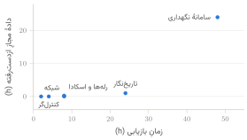
recovery objectives of each system (teaching)
system time h data lost h
protection relay settings 8 0.00
plant controller 4 0.00
SCADA servers 8 0.25
firewalls and switches 2 0.00
historian 24 1.00
CMMS (business) 48 24.00
configurations lose nothing: every change is backed up
before and after (lesson C); the historian may lose an
hour because the devices' buffers refill it (ch 35); the
business system may lose a day. The objectives decide
how backups are made, not the other way roundمثال 36.7 (پیکربندی هیچ چیز گم نمیکند) پرسش. هدفِ زمانِ بازیابی و هدفِ نقطهٔ بازیابیِ شش سامانهٔ نیروگاه را با هم مقایسه کنید. چرا پیکربندیها هیچ دادهای گم نمیکنند و سامانهٔ نگهداری یک روز گم میکند؟
پاسخ. پیکربندیها پیش و پس از هر تغییر پشتیبان میگیرند (بخش 36.4.5)، پس هیچ چیز گم نمیشود. تاریخنگار ممکن است یک ساعت گم کند، چون میانگیرِ دستگاهها آن را پر میکند (بخش 35.4.3). سامانهٔ نگهداری روزانه پشتیبان میگیرد و یک روز گم کردن را تحمل میکند. زمانها از دو ساعت برای شبکه تا ۴۸ ساعت برای سامانهٔ نگهداریاند.
تفسیر. هدفها تعیین میکنند پشتیبانها چگونه ساخته شوند، نه برعکس. هدفی که با پشتیبانِ موجود جور درآید فقط وضعِ موجود را ثبت کرده است. وارسی: کنترلگر با هدفِ چهار ساعت با مثال 36.5 میخواند: 3.5 h.
36.4.11 هزینهٔ توقف در برابرِ هزینهٔ کنترلها
the plant stopped for 5 days after a control-system incident (teaching)
energy not sold at 50 u/MWh: 202,123 u
security controls of this chapter: about 60,000 u a year
break-even: one such event every 3.4 years
the comparison is rough on purpose - it only shows that
availability, not secrecy, is what the plant's security
protects; the risk register (lesson A) is the real toolایده. اگر نیروگاه پس از یک رخدادِ سامانهٔ کنترل پنج روز متوقف شود، انرژیِ فروختهنشده با قیمتِ آموزشی حدودِ 202,000 u است. کنترلهای این فصل با برآوردِ آموزشی حدودِ 60,000 u در سال هزینه دارند. اگر چنین رخدادی هر 3.4 سال یک بار رخ دهد، دو هزینه برابرند. این مقایسه عمداً خام است. فقط نشان میدهد که امنیتِ نیروگاه بیشتر از دسترسپذیری محافظت میکند تا از محرمانگی. ابزارِ واقعی دفترِ ریسک است (بخش 36.2.3). وارسی: \(33.7 \times 24 \times 5 \times 50 = 202\,000\).
- چرا سه نسخهٔ پشتیبان فقط وقتی کمک میکنند که با هم خراب نشوند؟
- هدفِ زمان و هدفِ نقطهٔ بازیابی چه فرقی دارند؟
- چرا پیکربندیها هیچ دادهای گم نمیکنند؟
- چرا هدفها از روی پشتیبانِ موجود تعیین نمیشوند؟
- مقایسهٔ هزینهٔ توقف با هزینهٔ کنترلها چه چیزی را نشان میدهد و چه چیزی را نه؟
36.4.12 اندازه و زمانِ پشتیبانها
what is backed up and how long it takes (teaching sizes)
item count GB each total GB hours at 0.5 Gbit/s
device configurations 28 0.05 1.4 0.01
controller programs 3 0.20 0.6 0.00
server images 3 200.00 600.0 2.67
HMI images 6 80.00 480.0 2.13
1,082 GB in about 4.8 h; the historian's data is not
imaged but copied continuously to the DMZ (ch 35)
configurations are small and change often: kept after
every change; images are large and change rarely: kept
after each patch window and before each upgradeایده. پیکربندیِ ۲۸ دستگاه روی هم یکونیم گیگابایت است و پس از هر تغییر گرفته میشود. تصویرِ سرورها و نمایشگرها هزار گیگابایت است و در حدودِ پنج ساعت، پس از هر پنجرهٔ وصله و پیش از هر ارتقا گرفته میشود. دادهٔ تاریخنگار تصویر گرفته نمیشود. پیوسته به ناحیهٔ میانی رونوشت میشود (بخش 35.4.4). کوچکها زیاد تغییر میکنند و بزرگها کم. برنامهٔ پشتیبان از همین تفاوت ساخته میشود. وارسی: \(600 + 480 + 1.4 + 0.6 = 1082\,\text{GB}\).
36.4.13 صفِ اعلامیهها در طولِ سال
notices from makers waiting for installation over a year (synthetic)
notices in the year: 23
waiting on an average day: 2.9; at most: 8
quarterly windows let the backlog grow to a handful
before each window; each waiting notice has a risk note
and, where needed, a compensating control (lesson C)ایده. سازندگان در یک سالِ ساختگی ۲۳ اعلامیه میدهند، حدودِ دو در ماه. با پنجرههای سهماهه، در یک روزِ عادی حدودِ سه اعلامیه منتظرند و پیش از پنجره تا هشت. هر اعلامیهٔ منتظر یک یادداشتِ ریسک و، اگر لازم باشد، یک کنترلِ جبرانی دارد (بخش 36.4.4). صفِ کوتاه نشانهٔ برنامهٔ سالم است. صفِ بلند تصمیمی برای پنجرهٔ زودتر یا بستنِ یک خدمت میخواهد.
36.4.14 ردههای رخداد و آگاه کردن
incident classes and who is told (teaching)
class example informed
1 low a refused USB, a failed login OT lead, weekly
2 medium unknown device, unrecorded session OT lead, same day
3 high unexpected change on a controller owner and OT lead, 1 h
4 critical control affected or safety in doubt all + grid operator, now
the class decides who is called and how fast, not whether
the plant stops - stopping is a safety decision of the
control room under the operating rules; reporting duties
to authorities come from the country (ch 55-57)ایده. هر رخداد یک رده دارد که تعیین میکند چه کسی و با چه سرعتی خبر شود. ردهٔ پایین هفتگی بازبینی میشود. تغییرِ غیرمنتظره روی کنترلگر در یک ساعت به مالک میرسد. اگر کنترل آسیب دیده یا ایمنی مشکوک باشد، همه و بهرهبردارِ شبکه بیدرنگ آگاه میشوند. رده تصمیم نمیگیرد که نیروگاه بایستد یا نه. توقف تصمیمِ ایمنیِ اتاقِ کنترل زیرِ قاعدههای بهرهبرداری است. وظیفهٔ گزارش به مقامها از قانونِ کشور میآید (فصلهای ۵۵ تا ۵۷).
36.4.15 آموزش بر پایهٔ نقش
security training a year by role (teaching)
role people hours each
operators 8 4
control engineers 3 16
maintenance staff 10 3
vendors on site 12 1
122 hours a year in all
operators learn what to report and to whom; engineers
learn the change path and restore; vendors learn the
site's rules before their first session - each course
ends with the person's name in the recordایده. اپراتورها یاد میگیرند چه چیزی را به چه کسی گزارش کنند. مهندسان مسیرِ تغییر و بازگردانی را. سازندگان پیش از نخستین جلسهشان قاعدههای ساختگاه را. روی هم ۱۲۲ ساعت در سال. هر دوره با نامِ فرد در سابقه پایان مییابد، و حسابِ کسی که آموزش ندیده فعال نمیشود. وارسی: \(8 \times 4 + 3 \times 16 + 10 \times 3 + 12 \times 1 = 122\).
36.4.16 ترتیبِ بازیابی بر پایهٔ وابستگی
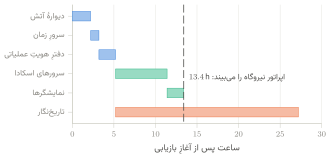
order of recovery after losing the control zone (teaching hours)
system hours needs first ready at h
firewall 2.2 - 2.2
time server 1.0 firewall 3.2
OT directory 2.0 time server 5.2
SCADA servers 6.2 OT directory 11.4
HMIs 2.0 SCADA servers 13.4
historian 22.0 OT directory 27.2
operators see the plant again after 13.4 h; the historian
is back after 27.2 h, working in parallel
one person doing everything in turn: 35.4 h
the order comes from what each system needs; the time
server and the directory are small but everything waits
for them - so their backups are tested firstمثال 36.8 (کوچکها نخست) پرسش. ناحیهٔ کنترل کاملاً از دست رفته است. هر سامانه چند ساعت بازیابی میخواهد و به سامانههایی وابسته است. اپراتور کی دوباره نیروگاه را میبیند؟ کارِ موازی چه سودی دارد؟ (ساعتهای آموزشی.)
پاسخ. زنجیرهٔ دیوارهٔ آتش، سرورِ زمان، دفترِ هویت، سرورهای اسکادا و نمایشگرها اپراتور را پس از 13.4 ساعت به نیروگاه برمیگرداند. تاریخنگار بهموازات و پس از 27.2 ساعت برمیگردد. اگر یک نفر همه را پشتِ سرِ هم انجام دهد، 35.4 ساعت طول میکشد.
تفسیر. ترتیب از نیازهای هر سامانه میآید. سرورِ زمان و دفترِ هویت کوچکاند، ولی همه منتظرشان میمانند. پس پشتیبانِ آنها نخست آزموده میشود. این همان «وابستگیهای بازیابی» است که مثالِ کارشدهٔ فصل میخواهد (بخش 36.5.2). وارسی: \(2.2 + 1.0 + 2.0 + 6.2 + 2.0 = 13.4\).
36.4.17 تأخیرِ اعلامیهٔ سازنده
from a public report to an installed fix (teaching days)
maker notice test wait (mean) total
S-A 30 14 45 89
S-B 90 14 45 149
S-C 14 14 45 73
the maker's delay adds to the plant's own: a fast notice
is worth asking for in the tender (lesson K), and the
waiting time is covered by the compensating controlsایده. از گزارشِ عمومیِ یک ضعف تا نصبِ وصله، تأخیرِ سازنده به تأخیرِ خودِ نیروگاه افزوده میشود. با آزمونِ چهاردهروزه و پنجرهٔ سهماهه، این زمان برای سازندهٔ سریع ۷۳ روز و برای کند ۱۴۹ روز است. اعلامیهٔ سریع ارزشِ خواستن در مناقصه را دارد (بخش 36.7.1). زمانِ انتظار با کنترلهای جبرانی پوشانده میشود. وارسی: \(90 + 14 + 45 = 149\).
36.4.18 نمونهٔ بازبینیِ ورودها
checking logins of a quarter against work permits (teaching)
2,000 logins; suppose 2 % have no permit behind them
sample size chance the sample finds at least one
20 33 %
50 64 %
100 87 %
150 95 %
149 logins give 95 % confidence of finding the problem
if 2 % or more are unexplained; the sample is drawn at
random by program, and every miss is followed upایده. در یک فصل دو هزار ورود ثبت شده است. فرض کنید دو درصد مجوزِ کار پشتشان نباشد. نمونهٔ بیستتایی فقط در یکسوم موارد دستکم یکی را پیدا میکند. نمونهٔ ۱۴۹تایی با اطمینانِ 95 %. نمونه با برنامه و تصادفی کشیده میشود و هر موردِ بیمجوز پیگیری میشود. همان حسابِ نمونهٔ پذیرشِ فصلِ ۳۵ (بخش 35.4.21) اینجا برای بازبینی به کار میرود. وارسی: \(\ln 0.05 / \ln 0.98 = 148.3\).
36.4.19 فهرستِ داراییها در برابرِ دستگاههای دیدهشده
the inventory against the devices seen on the network (synthetic)
in the inventory: 10; seen talking: 11
seen but not listed: LAPTOP-TMP, SW-X17
listed but not seen: GPS-1
a device nobody listed has no owner and no baseline - here
a spare switch someone connected and a temporary laptop;
a listed device that is silent may be off, failed or
gone. The comparison uses the plant's own records of
traffic, read passively; nothing is probedایده. فهرستِ داراییها با دستگاههایی مقایسه میشود که در سابقههای خودِ نیروگاه حرف زدهاند. دو دستگاه دیده شدهاند که در فهرست نیستند: یک سوئیچِ یدکی که کسی وصلش کرده و یک لپتاپِ موقت. هیچکدام مالک و خطمبنا ندارند. یک دستگاهِ فهرستشده هم خاموش است. ممکن است خاموش، خراب یا برداشته شده باشد. مقایسه از روی سابقههایی است که شبکه خودش نگه میدارد. هیچ دستگاهی پرسیده یا پویش نمیشود.
36.4.20 دفترِ ریسک پس از کنترلها
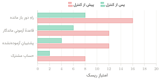
the risk register before and after its controls (teaching scales)
scenario before after control
vendor remote access left open 16 8 on request, timeouts
rule added for a test, never removed 12 6 quarterly review
backups never restored 12 4 restore tests
shared operator account 8 2 named accounts
controls lower the likelihood more often than the
consequence: a backup restored in a test does not make a
lost server cheaper, it makes a failed restore unlikely.
What remains is accepted by the asset owner in writingایده. کنترلها بیشتر احتمال را پایین میآورند تا پیامد را. پشتیبانی که در آزمون بازگردانی شده، از دست رفتنِ سرور را ارزانتر نمیکند. شکستِ بازگردانی را نامحتمل میکند. راهِ دورِ باز مانده از ۱۶ به ۸ و پشتیبانِ نیازموده از ۱۲ به ۴ میرسد. آنچه میماند، ریسکِ باقیمانده، را مالکِ دارایی کتبی میپذیرد (بخش 36.2.3). وارسی: \(1 \times 4 = 4\).
36.4.21 شاخصهای برنامهٔ امنیت
indicators of the security programme (synthetic quarter)
indicator done of %
accounts reviewed this quarter 6 6 100
backups restored in a test this quarter 4 5 80
findings closed by their date 5 7 71
maker notices assessed within 14 days 6 6 100
devices matching their baseline 26 28 93
indicators count what was done, not what was bought; a
number below 100 % is a list of names and dates, read by
the asset owner every quarterایده. شاخصها کارِ انجامشده را میشمارند، نه چیزی را که خریده شده است. درصدِ حسابهای بازبینیشده، پشتیبانهای آزموده، یافتههای بهموقع بستهشده، اعلامیههای ارزیابیشده و دستگاههای همخوان با خطمبنا. هر عددِ زیرِ صد درصد فهرستی از نامها و تاریخهاست که مالکِ دارایی هر فصل میخواند. وارسی: \(26/28 = 93\,\%\).
36.4.22 کلیدهای پشتیبانِ رمزشده
encrypted backups and their keys (teaching)
backups are encrypted, so a lost copy reveals nothing;
the key is kept apart from the backups, in the vault, with
a second sealed copy in the owner's safe
a restore test therefore includes fetching the key: in
the synthetic year 1 of 4 tests found the key holder
absent - the second copy and a named deputy closed it
a backup without its key is no backupایده. پشتیبانها رمز میشوند، تا نسخهٔ گمشده چیزی را آشکار نکند. کلید جدا از پشتیبانها در گاوصندوق نگه داشته میشود و یک نسخهٔ مهرومومشدهٔ دوم در گاوصندوقِ مالک است. پس آزمونِ بازگردانی گرفتنِ کلید را هم دارد. در سالِ ساختگی، یکی از چهار آزمون نشان داد که دارندهٔ کلید در دسترس نبود. نسخهٔ دوم و یک جانشینِ نامدار این شکاف را بستند. پشتیبانِ بیکلید پشتیبان نیست.
36.4.23 پیگیریِ یافتههای تمرین
findings of the yearly tabletop and their follow-up (synthetic)
finding owner days closed
call list with an old number OT lead 7 yes
HMI image older than the last patch control engineer 30 yes
grid operator contact not in the plan asset owner 14 yes
no spare HMI on site control engineer 90 NO
3 of 4 closed by their date; the open one is in the
findings record of lesson D with a new date
an exercise is worth its findings only if they are closedایده. تمرینِ رومیزیِ سالانه چهار یافته داشت: شمارهٔ کهنه در فهرستِ تماس، تصویرِ نمایشگر کهنهتر از آخرین وصله، نبودنِ تماسِ بهرهبردارِ شبکه در طرح، و نبودنِ نمایشگرِ یدکی در ساختگاه. سه یافته تا موعدشان بسته شدند. یکی با موعدِ تازه به دفترِ یافتهها رفت (بخش 36.5.3). تمرین فقط به اندازهٔ یافتههایی ارزش دارد که بسته میشوند.
- چرا پیکربندیها پس از هر تغییر و تصویرها پس از هر پنجره پشتیبان میگیرند؟
- صفِ اعلامیهها چه چیزی دربارهٔ برنامهٔ امنیت میگوید؟
- ردهٔ رخداد چه چیزی را تعیین میکند و چه چیزی را نه؟
- ترتیبِ بازیابی از کجا میآید و چرا سرورِ زمان نخست است؟
- تأخیرِ سازنده چگونه به تأخیرِ نیروگاه افزوده میشود؟
- نمونهٔ بازبینیِ ورودها چگونه اندازه میشود؟
- مقایسهٔ فهرست با دستگاههای دیدهشده چه چیزهایی پیدا میکند؟
- چرا کنترلها بیشتر احتمال را پایین میآورند؟
- شاخصها چه چیزی را میشمارند؟
36.4.24 حکمرانیِ امنیت در عدد
کنترلهای این فصل با گذشتِ زمان فرسوده میشوند: قاعدهها انباشته میشوند، حسابها پس از رفتنِ صاحبانشان میمانند، پیکربندیها بیسابقه تغییر میکنند و رازها کهنه میشوند. این درسها نشان میدهند هر فرسودگی با چه سرعتی پیش میرود و کدام عادتِ ساده جلویش را میگیرد. همه روی جدولهای ساختگیاند و هیچ محصول، نشانی یا جزئیاتِ ساختگاهی ندارند (A-408).
پرونده: companion/ch36/examples_s.py
36.4.25 مجموعهٔ قاعدهها در پنج سال
ایده. هر ماه چند قاعدهٔ تازه به دیوارهٔ آتش افزوده میشود: یک پروژه، یک سازنده، یک گزارشِ تازه. هر قاعدهٔ زنده هم با احتمالی کوچک بیاستفاده میشود، چون پروژه تمام شده یا دستگاه برداشته شده است. قاعدهٔ بیاستفاده خودش پاک نمیشود:
the firewall rule base over five years (teaching rates)
4 rules added a month; a live rule falls out of use with chance 3 %
a month
review rules at month 60 of them unused unused, 5-yr mean
never 248 135 53
yearly 152 39 14
quarterly 123 10 4
without review the rule base grows by every rule that was
ever needed, and over half of it is rules nobody uses -
each a door kept open for no purpose. A yearly review
still leaves dozens open between reviews; a quarterly
one against the conduit table keeps the base close to
what the plant needs (lesson B, rules)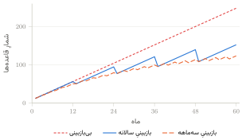
مثال 36.9 (۱۳۵ درِ باز بیدلیل) پرسش. ماهی چهار قاعده افزوده میشود و هر قاعدهٔ زنده با احتمالِ ۳٪ در ماه بیاستفاده میشود (نرخهای آموزشی). پس از پنج سال، با سه برنامهٔ بازبینی، چند قاعده هست و چندتایش بیاستفاده است؟
پاسخ. بیبازبینی ۲۴۸ قاعده که ۱۳۵ تایش بیاستفاده است. با بازبینیِ سالانه ۱۵۲ قاعده و ۳۹ بیاستفاده پیش از بازبینیِ بعدی. با بازبینیِ سهماهه ۱۲۳ و ۱۰.
تفسیر. بیبازبینی، بیش از نیمی از مجموعه درهایی است که هیچ هدفی ندارند. هر کدام ممکن است روزی مسیری را باز بگذارد که جدولِ مجراها نمیشناسد. بازبینیِ سهماهه، که هر قاعده را با جدولِ مجراها و شمارشِ برخوردهایش مقایسه میکند (بخش 36.3.2)، مجموعه را نزدیکِ نیازِ واقعی نگه میدارد. قاعدههای زنده در هر سه برنامه یکیاند. فرق فقط در قاعدههای مرده است. وارسی: \(248 - 135 = 113\)، همان شمارِ قاعدههای زنده در هر سه.
36.4.26 حسابهای کسانی که رفتهاند
accounts of people who left, still enabled (12 leavers a year)
process mean days open account-days a year
found by the quarterly access review 45 540
disabled by the HR leaving process 1 12
contractor end date set at creation 0 0
a review that runs every 90 days leaves each leaver's
account open for 45 days on average; a leaving process
that tells the OT administrator closes it the same day,
and an end date set when the account is made needs no
one to remember. The review stays, to catch what the
process missedایده. هر سال کارکنان و پیمانکارانی میروند. حسابشان تا وقتی کسی آن را نبندد باز میماند. اگر فقط بازبینیِ دسترسیِ سهماهه آن را پیدا کند، هر حساب بهطورِ میانگین ۴۵ روز باز است، یعنی ۵۴۰ حسابروز در سال. فرایندِ ترکِ کار که مدیرِ فناوریِ عملیاتی را خبر کند، آن را به ۱۲ میرساند. حسابِ پیمانکاری که از روزِ ساخت تاریخِ پایان دارد، به هیچکس نیاز ندارد که یادش بماند. بازبینی میماند، برای گرفتنِ آنچه فرایند از دست داد (بخش 36.3.3).
36.4.27 اندازهٔ پشتیبانها
backup storage: weekly fulls kept 13 weeks, daily changes 2 %
system full TB kept TB
SCADA servers 0.80 11.6
historian 6.00 87.4
engineering files 0.40 5.8
configurations 0.05 0.7
directory and time 0.10 1.5
one copy 107.0 TB; two independent copies 214.0 TB
the historian sets the size; keeping its fulls for 13
weeks costs more than every other system together. A
historian that can be rebuilt from the field devices'
buffers and the plant's archive needs fewer fulls - a
decision taken with its recovery objective, not by the
size of the diskایده. تاریخنگار اندازه را تعیین میکند: نگه داشتنِ ۱۳ نسخهٔ کاملِ آن بیش از همهٔ سامانههای دیگر روی هم جا میگیرد. دو نسخهٔ مستقل، یکی در ساختگاه و یکی بیرون (بخش 36.4.9)، اندازه را دو برابر میکنند. اما شمارِ نسخهها از هدفِ بازیابی میآید، نه از اندازهٔ دیسک. تاریخنگاری که از حافظهٔ دستگاههای میدانی و بایگانیِ نیروگاه دوباره ساخته میشود، نسخههای کاملِ کمتری لازم دارد. این تصمیم با مالکِ داده و هدفِ نقطهٔ بازیابیاش گرفته میشود (مثال 36.7). وارسی: \(6 \times 13 + 6 \times 0.02 \times 6 \times 13 = 78 + 9.4 = 87.4\,\text{TB}\).
36.4.28 پوششِ سابقهها در ناحیهها
devices that send security logs, by zone (synthetic)
zone devices sending coverage
field-ied 30 30 100 %
field-wtg 24 6 25 %
field-pv 40 12 30 %
field-bes 24 24 100 %
control 12 12 100 %
dmz 3 3 100 %
all OT zones 133 87 65 %
a total of 65 % hides the gaps: a quarter of the turbines
and under a third of the inverters are silent. Devices
that cannot log are covered at the next layer - the
switch port, the firewall in front of the zone - and the
gap is written in the risk register, not left unseen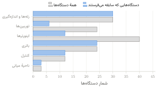
مثال 36.10 (۶۵ درصدی که شکاف را پنهان میکند) پرسش. از ۱۳۳ دستگاهِ ناحیههای فناوریِ عملیاتی، ۸۷ تا سابقهٔ امنیتی میفرستند (ساختگی). کجا شکاف هست و با آن چه میشود؟
پاسخ. پوششِ کل ۶۵٪ است. رلهها، باتری، کنترل و ناحیهٔ میانی کاملاند. توربینها ۲۵٪ و اینورترها ۳۰٪ پوشش دارند.
تفسیر. عددِ کل میگوید «دوسوم». عددِ هر ناحیه میگوید دو ناحیه تقریباً کورند. دستگاهی که نمیتواند سابقه بفرستد در لایهٔ بعدی پوشانده میشود: درگاهِ سوئیچ و دیوارهٔ آتشِ جلوی ناحیه (بخش 36.3.17). شکاف هم در دفترِ ریسک نوشته میشود، با مالک، نه آنکه نادیده بماند. خریدهای تازه توانِ ثبتِ سابقه را میخواهند (بخش 36.7.1). وارسی: \(87/133 = 0.654\).
36.4.29 اولویتِ وصلهها با در معرض بودن
40 notices (synthetic), 3 days each to test and install
order weighted exposure share
in the order they arrived 11,649 100 %
by the maker's severity 8,730 75 %
by severity x exposure 7,782 67 %
weighted exposure = severity x exposure x days waiting;
a severe notice for a device no one can reach waits behind
a medium one on a device reachable from the DMZ. The
exposure comes from the zone and conduit tables, which is
why they are kept currentایده. ۴۰ اعلامیهٔ ساختگی هر کدام سه روز آزمون و نصب لازم دارند. اگر به ترتیبِ رسیدن کار شوند، «در معرض بودنِ وزندار» صد درصد است. ترتیب بر پایهٔ شدتِ اعلامشدهٔ سازنده آن را به ۷۵٪ میرساند. ترتیب بر پایهٔ شدت ضربدر در معرض بودن، به ۶۷٪. در معرض بودن از جدولِ ناحیهها و مجراها خوانده میشود: دستگاهی که از ناحیهٔ میانی میشود به آن رسید، زودتر از دستگاهی با همان شدت وصله میشود که هیچ مجرایی به آن نمیرسد. از این رو این جدولها همیشه بهروز نگه داشته میشوند (بخش 36.4.4).
36.4.30 رانشِ پیکربندی میانِ دو وارسی
unrecorded configuration changes found by comparing with the baseline
check every mean days undetected longest
1 days 0.6 1.0
7 days 3.7 7.0
30 days 17.1 28.4
90 days 50.1 87.4
a change that bypassed the change process stays unseen
for half the check interval on average; a weekly
automated comparison of fingerprints (lesson E) costs
little and keeps the gap to daysایده. تغییری که از مسیرِ تغییر نگذشته، تا وارسیِ بعدی دیده نمیشود: بهطورِ میانگین نیمی از فاصلهٔ دو وارسی. با وارسیِ سهماهه ۵۰ روز، با وارسیِ هفتگی کمتر از ۴ روز. مقایسهٔ خودکارِ اثرانگشتِ پیکربندی با خطمبنا (بخش 36.6.3) ارزان است و میتواند هر هفته یا هر روز اجرا شود. هر ناهمخوانی یک یافته است: یا تغییری بیسابقه، یا خطمبنایی که بهروز نشده است.
36.4.31 چرخشِ رازها
rotating secrets: number, interval and hours each (teaching)
secret count every d h each h a year by hand
service accounts 40 365 0.50 20
device local admin 150 365 0.25 38
vendor break-glass 12 90 0.50 24
certificates 60 730 1.00 30
by hand 112 hours a year - about 0.07 of a person;
the hours are small, the risk is the rotation forgotten:
262 secrets on four calendars are rotated late when the
one person who knows is away. A vault that rotates the
service and local accounts itself leaves only the
break-glass and certificate work, and makes each
rotation a record instead of a memoryایده. ساعتها کماند: ۱۱۲ ساعت در سال. ریسک در ساعتها نیست، در چرخشی است که فراموش میشود. ۲۶۲ راز روی چهار تقویمِ گوناگون، وقتی تنها کسی که آنها را میشناسد در دسترس نیست، دیر چرخانده میشوند. گاوصندوقِ رازها (بخش 36.3.7) چرخشِ حسابهای خدمت و مدیرِ محلی را خودش انجام میدهد و از هر چرخش سابقه میگذارد. فقط حسابهای اضطراری و گواهیها کارِ دستی میمانند.
- چرا قاعدههای بیاستفاده خودبهخود پاک نمیشوند؟
- با بازبینیِ سالانه، پیش از بازبینیِ پنجم چند قاعدهٔ بیاستفاده هست؟
- ۲۰ نفر در سال میروند و حسابها بهطورِ میانگین ۱۰ روز باز میمانند. چند حسابروز؟
- اندازهٔ پشتیبان را کدام سامانه تعیین میکند و چه تصمیمی آن را کم میکند؟
- چرا پوششِ کلِ ۶۵٪ گمراه میکند؟
- دستگاهی که نمیتواند سابقه بفرستد چگونه پوشانده میشود؟
- چرا ترتیبِ وصله با در معرض بودن بهتر از ترتیب با شدت است؟
- وارسیِ پیکربندی هر ۱۴ روز. تغییرِ بیسابقه بهطورِ میانگین چند روز دیده نمیشود؟
- ریسکِ اصلیِ چرخشِ دستیِ رازها چیست؟
پاسخها: (۱) کسی نمیداند بیاستفادهاند تا بازبینی شوند؛ (۲) ۳۹؛ (۳) ۲۰۰؛ (۴) تاریخنگار؛ کمتر کردنِ نسخههای کامل با هدفِ بازیابی؛ (۵) دو ناحیه تقریباً کورند؛ (۶) در لایهٔ بعدی، درگاهِ سوئیچ و دیوارهٔ آتش؛ (۷) دستگاهِ دستیافتنی زودتر وصله میشود؛ (۸) ۷؛ (۹) چرخشی که فراموش میشود.
36.5 ت. تمرینِ طراحیِ دفاعی
این تمرین مدلِ ساختگیِ شبکهٔ نیروگاهِ P را بازبینی میکند. سه پرسش دارد. کدام جریانها بیمجرا هستند؟ کدام دستگاهها نقطهٔ تکِ خرابیاند؟ کدام یافتهها با چه مالکی و تا چه تاریخی بسته میشوند؟ این همان مثالِ کارشدهای است که ارزیابی میخواهد: نمودارهای سطحِ بالای فیزیکی و منطقی، ناحیهها و مجراها، هدفِ هر مسیر، وابستگیهای بازیابی و بازبینیِ نقطههای تکِ خرابی.
همهچیز در یک برنامه و روی جدولهای ساختگی اجرا میشود. هیچ شبکهای پویش نمیشود، هیچ دستگاهی لمس نمیشود و هیچ ترافیکی ساخته نمیشود. «جریانهای دیدهشده» یک جدولِ ساختگیاند، نه سابقهٔ یک شبکهٔ واقعی. بازبینیِ یک سامانهٔ واقعی با مجوزِ مالک، بیقطعِ کار و به دستِ افرادِ مجاز انجام میشود.
36.5.1 جریانهای بیمجرا
ایده. جدولِ مجراها (بخش 36.2.6) با جریانهایی که در یک هفتهٔ ساختگی دیده شدهاند مقایسه میشود. هر جریانی که مجرا ندارد یک یافته است:
def unlisted_flows(flow_log, conduits):
"""Flows seen that no conduit allows: each is a finding."""
return [(s, d, svc, n) for s, d, svc, n in flow_log
if not ot.allowed(conduits, s, d, svc)]a week of flows (synthetic) checked against the conduit table
flows seen: 10 kinds; allowed by a conduit: 8
not allowed by any conduit:
business -> control file-share 14 in a week
field-pv -> business cloud-telemetry 50,400 in a week
a file share from the business zone straight into control,
and inverters sending data to a maker's cloud past every
zone: neither has a purpose on the conduit table, so
each is closed or, if it is needed, given a conduit with
a purpose, an owner and a rule - through the DMZمثال 36.11 (اینورترهایی که به ابر حرف میزنند) پرسش. از ده گونه جریانِ دیدهشده، کدام مجرا ندارند؟ با هر کدام چه میشود؟ (دادهٔ ساختگی، A-401.)
پاسخ. دو جریان. یکی اشتراکِ پرونده از شبکهٔ کسبوکار مستقیم به ناحیهٔ کنترل است. دیگری اینورترهاییاند که داده را از کنارِ همهٔ ناحیهها به ابرِ سازنده میفرستند.
تفسیر. هیچکدام در جدولِ مجراها هدفی ندارند. پس هر کدام بسته میشود، یا اگر لازم است، مجرایی با هدف، مالک و قاعده میگیرد که از ناحیهٔ میانی بگذرد. اتصالِ ابریای که «خودش آمد» یکی از رایجترین درهای پنهان است. از این رو در خرید ممنوع یا با شرط نوشته میشود (بخش 36.7.1). وارسی: \(10 - 8 = 2\).
36.5.2 نقطههای تکِ خرابی
ایده. توپولوژی بهصورتِ یک گراف دیده میشود. هر گره یک بار برداشته میشود و وارسی میشود که ناحیهٔ کنترل هنوز به هر ناحیهٔ دیگر میرسد یا نه. گرهای که برداشتنش ناحیهای را جدا کند، نقطهٔ تکِ خرابی است:
def reachable(links, start, removed=None):
"""Nodes reachable from start when one node is removed."""
adj = {}
for a, b in links:
if removed in (a, b):
continue
adj.setdefault(a, set()).add(b)
adj.setdefault(b, set()).add(a)
seen, todo = {start}, [start]
while todo:
for nxt in adj.get(todo.pop(), ()):
if nxt not in seen:
seen.add(nxt)
todo.append(nxt)
return seen
def single_points(links, hub, targets):
"""Nodes whose loss cuts the hub off from at least one target."""
nodes = {n for link in links for n in link} - {hub} - set(targets)
out = {}
for n in sorted(nodes):
seen = reachable(links, hub, removed=n)
lost = [t for t in targets if t not in seen]
if lost:
out[n] = lost
return out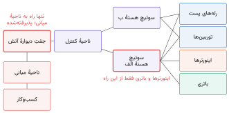
single points of failure of the synthetic topology
node cuts the control zone off from
FW-PAIR dmz, business
SW-CORE-A field-pv, field-bes
the turbine and substation zones have two core switches;
PV and battery hang on core A alone - a finding, because
the battery's control path should not depend on one box;
the firewall pair is the only way to the DMZ, which is
accepted (lesson B): the plant runs without the DMZایده. ناحیههای توربین و پست دو سوئیچِ هسته دارند. اینورترها و باتری فقط به هستهٔ الف بستهاند. این یک یافته است، زیرا راهِ کنترلِ باتری نباید به یک جعبه وابسته باشد. جفتِ دیوارهٔ آتش تنها راه به ناحیهٔ میانی است. این پذیرفته شده است، چون نیروگاه بیناحیهٔ میانی کار میکند (بخش 36.3.9). خودِ «جفت» دو دستگاه است. در گراف یک گره است، چون هر دو در یک مکان و با یک پیکربندیاند. وابستگیهای بازیابی هم از همین گراف خوانده میشوند: پیش از ناحیهٔ میانی، دیوارهٔ آتش برمیگردد. پیش از اینورترها، سوئیچِ الف.
36.5.3 دفترِ یافتههای بازبینی
design review record of the synthetic model (teaching scales)
finding score band owner due d
rule R05 allows any to any 20 very high OT lead 7
business file share into control 15 very high OT lead 7
vendor account with software rights 12 high OT lead 14
inverter data to a maker's cloud 12 high ctrl eng 30
PV and battery on one core switch 8 medium ctrl eng 180
2 inventory rows without an owner 6 medium OT lead 30
firewall restore 12 min over target 4 low ctrl eng 90
every finding has a score, an owner and a date; the record
is reviewed until each one is closed or accepted by the
asset owner in writing - and it names no address, no
product version and no path a reader outside could useمثال 36.12 (هفت یافته، هفت مالک) پرسش. یافتههای بازبینی را با امتیازِ ریسک، مالک و موعد مرتب کنید. کدام نخست بسته میشوند؟
پاسخ. قاعدهٔ همهبههمه (۲۰) و اشتراکِ پرونده به ناحیهٔ کنترل (۱۵) «بسیار بالا» هستند و در هفت روز بسته میشوند. حسابِ سازنده با حقِ نرمافزار و دادهٔ اینورترها به ابر (هر کدام ۱۲) «بالا» هستند. وابستگیِ اینورترها و باتری به یک سوئیچ (۸) «میانه» است و با کارِ برنامهریزیشده در ۱۸۰ روز بسته میشود.
تفسیر. هر یافته امتیاز، مالک و تاریخ دارد. دفتر تا وقتی بازبینی میشود که هر یافته بسته شود یا مالکِ دارایی آن را کتبی بپذیرد. دفتر هیچ نشانی، نسخهٔ محصول یا راهی که خوانندهای بیرونی بتواند به کار ببرد ندارد (بخش 36.6.1). وارسی: \(4 \times 5 = 20\) و \(3 \times 5 = 15\).
- جریانهای دیدهشده با چه چیزی مقایسه میشوند و یافته چیست؟
- با جریانی که مجرا ندارد ولی لازم است چه میشود؟
- نقطهٔ تکِ خرابی در گراف چگونه پیدا میشود؟
- چرا جفتِ دیوارهٔ آتش در گراف یک گره است؟
- وابستگیهای بازیابی از کجا خوانده میشوند؟
- دفترِ یافتهها چه چیزهایی دارد و چه چیزهایی ندارد؟
36.6 ث. کنترلِ چرخهٔ عمرِ دادهٔ دارایی
نقشهها، پیکربندیها، رازها، سابقهها و دفترچههای سازنده خودشان داراییاند. بعضی از آنها راهِ رسیدن به نیروگاه و تغییرِ آن را توصیف میکنند. این بخش میگوید هر سند چه ردهای دارد، چه کسی متولیِ آن است، چگونه بیرون میرود و برمیگردد، چگونه با آنچه در حالِ کار است مقایسه میشود، چه مدت نگه داشته میشود و چگونه از میان میرود.
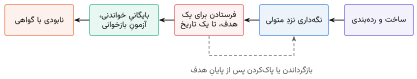
36.6.1 رده و متولی
records of the control system by class (synthetic counts)
record class custodian count
public project summary public communications 3
one-line and layout drawings internal document control 420
network diagrams, address plans restricted OT lead 35
controller and relay configurations restricted control engineer 410
credentials and keys secret OT lead (vault) 260
historian data internal control engineer 1
maintenance records internal maintenance lead 18,000
vendor manuals internal document control 900
the class decides who may read, copy and send a record;
network diagrams and configurations are restricted
because they describe how to reach and change the plant;
credentials live only in a managed vault. Every class
has a custodian who answers for itایده. هر سند یک رده دارد: عمومی، داخلی، محدود یا محرمانه. رده تعیین میکند چه کسی میتواند بخواند، رونوشت کند و بفرستد. نقشههای شبکه و پیکربندیها محدودند، زیرا راهِ رسیدن به نیروگاه و تغییرِ آن را توصیف میکنند. رازها و کلیدها محرمانهاند و فقط در گاوصندوقِ مدیریتشده میمانند. هر رده یک متولی دارد که پاسخگوی آن است. اینها همان دفترهای کنترلشدهٔ فصلهای ۳۴ و ۳۵ هستند، با یک ستونِ تازه برای رده.
36.6.2 فرستادن به بیرون، با هدف و تاریخ
data sent to outside parties (synthetic register)
to what purpose days left
turbine maker turbine logs, 3 months warranty claim 40
inverter maker inverter configurations firmware study -25
integrator network diagram, sanitised extension design 10
insurer availability summary renewal -120
2 transfers past their end: the data is to be returned or
deleted and the deletion confirmed in writing
each transfer is approved for a purpose, carries only
what the purpose needs (a sanitised diagram, not the
address plan) and ends on a dateایده. هر فرستادنِ داده به بیرون برای یک هدف تأیید میشود. فقط آنچه هدف لازم دارد فرستاده میشود، مثلاً نمودارِ پالایششده به جای طرحِ نشانیها، و در تاریخی پایان مییابد. در دفترِ ساختگی، دو فرستادن از تاریخِ پایانشان گذشتهاند. داده باید برگردانده یا پاک شود و پاک شدن کتبی تأیید شود. همان منطقِ «فقط خواندنی، فقط نسخه» که فصلِ ۳۵ برای جریانهای درونی داشت (بخش 35.7.3)، اینجا برای بیرون به کار میرود.
36.6.3 خطمبناها در برابرِ آنچه کار میکند
running configuration against the baseline (synthetic)
device baseline running result
SW-R01 eb93aa079858 eb93aa079858 same
SW-R02 eb93aa079858 b0f6fa39e0df DIFFERENT
FW-1 3eb7f842f7f5 3eb7f842f7f5 same
PPC-A 7e628310c42a 2ad9968be01c DIFFERENT
2 devices differ from their baseline: a switch on older
firmware and a controller with a settings revision that
no change record explains - each is an incident until a
record is found or the baseline restoredمثال 36.13 (نسخهای که هیچ تغییری توضیحش نمیدهد) پرسش. اثرانگشتِ پیکربندیِ در حالِ کارِ چهار دستگاه با خطمبنایشان مقایسه میشود. کدامها فرق دارند و با آنها چه میشود؟ (دادهٔ ساختگی، A-404.)
پاسخ. دو دستگاه فرق دارند. سوئیچِ SW-R02 میانافزارِ قدیمیتر دارد. کنترلگرِ PPC-A بازنگریِ تنظیمی دارد که هیچ سابقهٔ تغییری توضیحش نمیدهد.
تفسیر. هر کدام تا وقتی سابقهای پیدا شود یا خطمبنا برگردانده شود، یک رخداد است (بخش 36.4.5). مقایسه پس از هر تغییر و در هر بازدیدِ نگهداری تکرار میشود (بخش 35.8.1). وارسی: دو اثرانگشتِ «same» و دو «DIFFERENT».
36.6.4 نگهداری و بایگانیِ خواندنی
retention and archive of security records (teaching)
record kept years
configurations and their history plant life + 5 y 30
security logs 1 year online, 3 archived 4
access reviews and changes plant life 25
incident records plant life 25
vendor transfers register plant life 25
an archive is useful only if it can still be read: formats
are moved to current ones every 5 years and a sample is
read back after each move; the archive is restored in a
test like any backupایده. پیکربندیها و تاریخچهشان تا پنج سال پس از عمرِ نیروگاه نگه داشته میشوند. سابقههای امنیتی یک سال روی خط و سه سال در بایگانی. بازبینیهای دسترسی، تغییرها، رخدادها و دفترِ فرستادنها برای کلِ عمر. بایگانی فقط وقتی سودمند است که هنوز خوانده شود. قالبها هر پنج سال به قالبهای روز برده میشوند و نمونهای پس از هر جابهجایی بازخوانی میشود (بخش 35.4.20).
36.6.5 یکپارچگیِ سامانههای کسبوکار با فناوریِ عملیاتی
integrations of business systems with OT (teaching)
integration verdict
historian copy to the DMZ, read by business allowed, one way
CMMS reads running hours from the DMZ copy allowed, one way
asset register sends tag names to a review allowed, reviewed
CMMS writes a work order into SCADA NOT allowed
business single sign-on into OT devices NOT allowed
maker's cloud reads inverters directly NOT allowed as built
business systems are fed from copies outside the control
zone; nothing on the business side can change, log into
or reach a control device (ch 35 lesson F)ایده. سامانههای کسبوکار از نسخههایی بیرون از ناحیهٔ کنترل تغذیه میشوند. سامانهٔ نگهداری ساعتهای کار را از نسخهٔ ناحیهٔ میانی میخواند. ثبتِ داراییها نامِ برچسبها را برای بازبینی میفرستد. هیچ چیزی در سویِ کسبوکار نمیتواند دستگاهِ کنترلی را تغییر دهد، به آن وارد شود یا به آن برسد. نه دستورِ کار به اسکادا نوشته میشود، نه ورودِ یکپارچهٔ کسبوکار به دستگاههای عملیاتی میرسد، نه ابرِ سازنده اینورترها را مستقیم میخواند (بخش 36.5.1). این همان مرزِ فصلِ ۳۵ است (بخش 35.7)، از نگاهِ امنیت.
36.6.6 پاککردنِ رسانه در کنار گذاشتن
devices that hold data when retired (synthetic)
device count holds
SCADA servers 2 disks
HMIs 6 disks
historian 1 disks
switches 34 flash: configuration
controllers 2 flash: logic
engineering laptops 3 disks
48 devices to wipe or destroy, each with a certificate,
when replaced, sold or scrapped; a switch sent back under
warranty with its configuration still on it gives away
the plant's network to whoever opens itایده. ۴۸ دستگاهِ نیروگاه داده نگه میدارند: دیسکِ سرورها و نمایشگرها، و حافظهٔ سوئیچها و کنترلگرها با پیکربندی و منطق. هر کدام هنگامِ جایگزینی، فروش یا اسقاط پاک یا نابود میشود و گواهی میگیرد. سوئیچی که با پیکربندیاش برای ضمانت پس فرستاده شود، شبکهٔ نیروگاه را به هر کسی که بازش کند نشان میدهد. وارسی: \(2 + 6 + 1 + 34 + 2 + 3 = 48\).
- چهار ردهٔ سندها و یک نمونه از هر کدام را بگویید.
- چرا نقشههای شبکه محدودند؟
- فرستادنِ داده به بیرون چه شرطهایی دارد؟
- اثرانگشتِ متفاوت با خطمبنا چه معنایی دارد؟
- چرا بایگانی هر پنج سال جابهجا میشود؟
- کدام یکپارچگیها با فناوریِ عملیاتی مجازند و کدام نه؟
- چرا رسانه پیش از پس فرستادن پاک میشود؟
36.7 ساخت و تولیدِ صنعتی: خرید، خاستگاه و زنجیرهٔ تأمین
امنیتِ یک دستگاه در کارخانهٔ سازنده آغاز میشود: روندِ توسعهٔ امن، تواناییهای امنیتیِ محصول، دورهٔ پشتیبانی و راهِ رسیدنِ دستگاه به نیروگاه. فرایندِ کارخانه و پروندهٔ آزمونِ هر قلم در فصلهای ۴۰ و ۴۸ میآیند. این بخش آنچه را خریدار میخواهد، میسنجد و هنگامِ تحویل وارسی میکند تعریف میکند.
36.7.1 خواستههای امنیتی در خرید
security requirements written into a purchase (teaching list)
requirement basis
secure development process of the maker STD-159
component security capabilities declared STD-160
integrator's and service provider's programme STD-161
security notices and patches for N years contract
list of software components and versions contract
signed firmware; hashes published contract
no default passwords; unique per device contract
remote access only through the owner's path contract
what is not asked for in the purchase is hard to get
later; each requirement is tested in the factory test
or checked on delivery, not trusted from a brochureایده. آنچه در خرید خواسته نشود، بعداً بهسختی به دست میآید. خریدار روندِ توسعهٔ امنِ سازنده (STD-159)، تواناییهای امنیتیِ اعلامشدهٔ محصول (STD-160) و برنامهٔ امنیتیِ یکپارچهساز (STD-161) را میخواهد. قرارداد هم اینها را میخواهد: اعلامیهها و وصلهها تا چند سال، فهرستِ اجزای نرمافزاری و نسخههایشان، میانافزارِ امضاشده با درهمِ منتشرشده، نبودِ گذرواژهٔ پیشفرض، و دسترسیِ دور فقط از راهِ مالک. هر خواسته در آزمونِ کارخانه آزموده یا هنگامِ تحویل وارسی میشود. از روی بروشور پذیرفته نمیشود.
36.7.2 کارنامهٔ تأمینکننده
supplier scorecard (0-5, teaching weights)
supplier secure_dev patch_supp notice provenance local_serv score
weight 3 3 2 2 1
S-A 4 4 3 4 2 3.64
S-B 2 3 2 3 5 2.73
S-C 5 2 4 5 3 3.82
S-C leads on secure development and provenance though its
patch support is short - a gap to close in the contract;
S-B has the best local service and the weakest security
practice; the weights say what matters more for a plant
that must be patched for 25 years, and the scores come
from evidence asked for in the tenderمثال 36.14 (بهترین خدمتِ محلی، ضعیفترین امنیت) پرسش. سه تأمینکنندهٔ ساختگی در پنج معیار امتیازِ صفر تا پنج دارند. وزنها برای نیروگاهی که باید ۲۵ سال وصله شود سه، سه، دو، دو و یکاند. امتیازِ وزنیِ هر کدام چیست؟ (عددهای آموزشی، A-406.)
پاسخ. S-C 3.82، S-A 3.64 و S-B 2.73.
تفسیر. S-C در توسعهٔ امن و خاستگاه پیش است، ولی دورهٔ پشتیبانیاش کوتاه است. این شکافی است که در قرارداد بسته میشود. S-B بهترین خدمتِ محلی و ضعیفترین روندِ امنیتی را دارد. وزنها میگویند چه چیزی برای این نیروگاه مهمتر است، و امتیازها از شاهدی میآیند که در مناقصه خواسته شده است (فصلِ ۳۹). وارسی: \((5 \times 3 + 2 \times 3 + 4 \times 2 + 5 \times 2 + 3)/11 = 42/11 = 3.82\).
36.7.3 وارسیِ خاستگاه هنگامِ تحویل
provenance checks on delivery of 34 switches (teaching)
serial numbers against the maker's shipment list 34 of 34
firmware signature verified, hash against notice 34 of 34
seals and packaging intact 33 of 34
one switch with a broken seal: held, not installed, the
maker asked to confirm the serial and reflash from the
signed image on the test bench
34 of 34 checked: every device, because one
counterfeit or altered switch sits inside the ringایده. هر ۳۴ سوئیچ هنگامِ تحویل سه وارسی دارند. شمارهٔ سریال با فهرستِ ارسالِ سازنده سنجیده میشود. امضای میانافزار وارسی و درهمش با اعلامیه مقایسه میشود. مهر و بستهبندی هم دیده میشود. یک سوئیچ مهرِ شکسته دارد. نگه داشته میشود و نصب نمیشود. از سازنده خواسته میشود سریال را تأیید کند و روی میزِ آزمون از تصویرِ امضاشده دوباره بارگذاری میشود. همهٔ دستگاهها وارسی میشوند، نه نمونهای از آنها، چون یک سوئیچِ تقلبی یا دستخورده درونِ حلقه مینشیند. این وارسی بخشی از دریافت و انبارِ فصلِ ۳۱ است.
36.7.4 دورهٔ پشتیبانی در برابرِ عمرِ نیروگاه
maker's support against the plant's life (teaching)
support promised generations of a device in 25 years
5 y 5
7 y 4
10 y 3
15 y 2
each generation is a purchase, a test and an outage; a
longer support period is worth paying for in the tender,
and the end-of-support dates enter the inventory (lesson C)ایده. با پشتیبانیِ پنجساله، یک دستگاه در ۲۵ سال پنج نسل دارد. با پانزدهساله، دو نسل. هر نسل یک خرید، یک آزمون و یک توقف است. دورهٔ پشتیبانیِ بلندتر ارزشِ پرداختن در مناقصه را دارد. تاریخهای پایانِ پشتیبانی به فهرستِ داراییها میروند (بخش 36.4.8). وارسی: \(\lceil 25/7 \rceil = 4\) نسل برای پشتیبانیِ هفتساله.
36.7.5 بازبینیِ طراحیِ شبکهٔ سازنده بیافشای ساختگاه
reviewing a vendor's network design without exposing the site
shared with the vendor
zones, conduits and purposes yes
device kinds and counts yes
required availability and recovery times yes
addresses, names of real hosts no
credentials, keys, firewall rules as running no
site location and access routes no
the vendor designs against a sanitised model of the plant
under a confidentiality agreement; the review checks the
design against the conduit table and the targets, and
the owner fills in the real details after acceptanceایده. سازنده یا یکپارچهساز برای طراحیِ شبکه به اطلاعات نیاز دارد. ولی نشانیها، نامِ میزبانهای واقعی، رازها، قاعدههای در حالِ کار و مکان و راههای رسیدن به ساختگاه را لازم ندارد. او روی یک مدلِ پالایششده طراحی میکند: ناحیهها، مجراها و هدفها، گونه و شمارِ دستگاهها، و دسترسپذیری و زمانهای بازیابیِ لازم. این کار زیرِ قراردادِ رازداری انجام میشود. بازبینی طراحی را با جدولِ مجراها و هدفها میسنجد و مالک پس از پذیرش جزئیاتِ واقعی را پر میکند. همین قاعده برای نمونههای این فصل هم برقرار است: هیچکدام چیزی از یک ساختگاهِ واقعی ندارند.
- چهار خواستهٔ امنیتیِ قراردادِ خرید را بگویید.
- چرا خواستهها آزموده یا وارسی میشوند و از روی بروشور پذیرفته نمیشوند؟
- کارنامهٔ تأمینکننده چگونه ساخته میشود و وزنها از کجا میآیند؟
- سه وارسیِ خاستگاه هنگامِ تحویل را بگویید.
- دورهٔ پشتیبانی چگونه شمارِ نسلهای یک دستگاه را تعیین میکند؟
- چه چیزهایی با سازنده برای طراحیِ شبکه به اشتراک گذاشته نمیشود؟
36.7.6 فهرستِ اجزای نرمافزاری
a maker's notice about 'web-ui 2.1': which devices are affected?
device kind count
ring switch 14
substation switch 6
20 devices of 28, answered from the list in
minutes; without a software-components list from each
maker the same question takes days of asking. The
compensating control for these: the web interface off on
every switch until the fix is installed (lesson C)ایده. اعلامیهای از سازنده دربارهٔ یک جزءِ نرمافزاری، مثلاً یک رابطِ وب، میرسد. کدام دستگاهها آن را دارند؟ اگر هر سازنده فهرستِ اجزای نرمافزاریِ محصولش را داده باشد (بخش 36.7.1)، پاسخ در چند دقیقه از جدول میآید: ۲۰ سوئیچ از ۲۸ دستگاه. بیاین فهرست، همان پرسش روزها پرسیدن از سازندگان میخواهد. کنترلِ جبرانی تا نصبِ وصله، خاموش کردنِ رابطِ وب روی همهٔ سوئیچهاست (بخش 36.4.4). وارسی: \(14 + 6 = 20\) و \(14 + 6 + 1 + 6 + 1 = 28\).
36.7.7 طرفهای بیرونی با دسترسی
outside parties with any access to the control system (teaching)
party access controlled by
turbine maker remote sessions contract clauses, quarterly review
inverter maker data transfers transfer register, expiry
integrator design, commissioning sanitised model, NDA
grid operator telecontrol agreed profile (U-115)
insurer summaries transfer register
5 parties, each with a contract, an owner on the plant
side and an end date for every right it holdsایده. پنج طرفِ بیرونی دسترسیای به سامانهٔ کنترل یا دادههایش دارند: سازندهٔ توربین با جلسههای دور، سازندهٔ اینورتر با فرستادنِ داده، یکپارچهساز با طراحی و راهاندازی، بهرهبردارِ شبکه با دورکنترل، و بیمهگر با خلاصهها. هر طرف یک قرارداد، یک مالک در سویِ نیروگاه و یک تاریخِ پایان برای هر حقی که دارد. حقی که تاریخِ پایان ندارد، با پایانِ قرارداد هم باقی میماند (بخش 36.6.2).
- فهرستِ اجزای نرمافزاری به کدام پرسش پاسخ میدهد؟
- چرا هر حقِ طرفِ بیرونی تاریخِ پایان دارد؟
36.8 نیروگاهِ P: سه مثالِ یکپارچه
برنامه:
python -m companion.ch36.integratedمثال 36.15 (مقدماتی: دو نتیجه با دست) پرسش. حجمِ سالانهٔ سابقههای دو دیوارهٔ آتش و امتیازِ ریسکِ راهِ دورِ باز مانده را با دست حساب و با کد مقایسه کنید.
two security results checked by hand
firewall logs: 2 x 400,000 events x 300 B x 365 d = 87.6 GB; code 87.6
risk of an open vendor path: 4 x 4 = 16 -> very high
a hand check catches the commonest slip in sizing logs:
events a day of one device taken for all devices togetherپاسخ. 87.6 GB و ۱۶، «بسیار بالا»، هر دو برابر با کد.
تفسیر. رایجترین لغزش در اندازه کردنِ سابقهها این است که رخدادهای روزانهٔ یک دستگاه به جای همهٔ دستگاهها گرفته شود. وارسیِ دستی آن را پیدا میکند. وارسی: \(800\,000 \times 300 = 2.4 \times 10^8\) بایت در روز.
مثال 36.16 (میانی: بستهٔ امنیت در عدد) پرسش. بستهٔ امنیتِ مدلِ ساختگیِ نیروگاهِ P را در عدد خلاصه کنید.
the security package of Plant P in numbers (synthetic model)
8 zones, 8 conduits, each with a purpose; default deny
rule review: 1 any-any, 3 shadowed, 2 unused, 1 undocumented
flows outside the conduits: 2; single points of failure: 2
access: 2 accounts with extra rights, 1 dormant, 1 shared
inventory: 4 of 10 rows with a gap; 2 baselines drifted
recovery: 1 of 5 systems over its target; restores quarterly
vendor access: 48 h a year on request instead of 8,760
review record: 7 findings, each with an owner and a dateتفسیر. ارزشِ بسته در سابقههایی است که هر کنترل را ثابت میکنند: جدولِ مجراها، بازبینیِ قاعدهها، ماتریسِ دسترسی، فهرستِ داراییها، آزمونهای بازگردانی، دفترِ فرستادنها و دفترِ یافتهها. وارسی: هفت یافتهٔ مثال 36.12.
مثال 36.17 (یکپارچه: مبنای امنیتِ فناوریِ عملیاتیِ نیروگاهِ P) پرسش. مبنای امنیت را با یافتهها و موردهای باز بنویسید.
D-040 OT security basis of Plant P (teaching)
1 governance: asset owner's programme (STD-156), named
owners, risk register with teaching scales, life cycle
2 architecture: zones and conduits from the ch 35 logical
diagram, one rule a conduit with a purpose, default deny,
DMZ for every outside path, priority to safety and
availability; no business path into control
3 access: named accounts by role, quarterly review, vendor
sessions on request through a recorded jump host
4 monitoring: logs from every device on the plant clocks,
the few that matter read daily, alerts tuned
5 resilience: inventory complete, baselines compared,
backups before and after each change, three copies one
offline, quarterly restore tests, recovery objectives
6 data: classes, custodians, expiring transfers, readable
archives, media wiped at retirement
7 supply: security requirements in every purchase,
scorecards, provenance checks, support dates in the
inventory; sanitised models for vendor design reviews
8 people: tabletop each year, a continuity plan without
SCADA, an interface table with physical security
open: grid operator's security requirements and the
site's physical-security assessment (U-117)تفسیر. این تصمیمِ D-040 است. یافتههایی که به فصلهای دیگر برمیگردند:
- اینورترها و باتری فقط به یک سوئیچِ هسته بستهاند. سوئیچِ دوم به طرحِ شبکهٔ فصلِ ۳۵ افزوده میشود.
- اتصالِ ابریِ اینورترها از کنارِ همهٔ ناحیهها در خرید ممنوع یا از ناحیهٔ میانی گذرانده میشود (فصلهای ۳۹ و ۴۸).
- بازیابیِ دیوارهٔ آتش یدکیِ پیکربندیشده میخواهد. بازیابیِ تاریخنگار نسخهٔ آماده در ناحیهٔ میانی (فصلهای ۳۵ و ۵۱).
- پایانِ پشتیبانیِ ۱۲۰ دستگاه در عمرِ نیروگاه، بودجه و برنامه میخواهد (فصلهای ۲۱ و ۵۱).
- چهار مجرا از هشت مجرا پروتکلهای بیاحرازِ هویت دارند. پروفایلهای امن در خریدهای تازه خواسته میشوند (فصلهای ۳۵ و ۳۹).
- اپراتور پس از از دست رفتنِ کاملِ ناحیهٔ کنترل 13.4 ساعت بعد نیروگاه را دوباره میبیند. پشتیبانِ سرورِ زمان و دفترِ هویت نخست آزموده میشود (مثال 36.8).
- بر پایهٔ زیانِ موردِ انتظار، آزمونِ پشتیبان خودش را نمیپردازد، ولی برای زمانِ بازیابی و شاهدش نگه داشته میشود (مثال 36.3).
36.9 عددهای کلیدیِ امنیتِ نیروگاهِ P
| کمیت | مقدار | مثال |
|---|---|---|
| هزینهٔ کنترلگرِ ازدسترفته در حالتِ پشتیبان | حدودِ 842 u در ساعت | مثال 36.1 |
| بالاترین ریسکِ دفتر | ۱۶، راهِ دورِ باز مانده | مثال 36.2 |
| یافتههای بازبینیِ قاعدهها | ۱ همهبههمه، ۳ سایهخورده | مثال 36.4 |
| ساعتهای وجودِ راهِ دور | 8,760 در برابرِ 48 | بخش 36.3.4 |
| سابقههای یک سال | حدودِ 129 GB | بخش 36.3.5 |
| پشتیبانِ خراب با آزمونِ سهماهه / سالانه | 4 / 12 % | بخش 36.4.3 |
| جریانهای بیمجرا / نقطههای تکِ خرابی | ۲ / ۲ | مثال 36.11 |
| جایگزینیهای پایانِ پشتیبانی در ۲۵ سال | ۱۲۰ | بخش 36.4.8 |
36.10 گردشِ کارِ امنیتِ فناوریِ عملیاتی
- اولویتها و داراییها: ایمنی، دسترسپذیری، آنچه در خطر است (بخش 36.2.1، بخش 36.2.2).
- دفترِ ریسک با مقیاسها و مالکها؛ چرخهٔ عمر و نقشها (بخش 36.2).
- ناحیهها و مجراها از نمودارِ منطقی؛ یک قاعده برای هر مجرا، بستنِ پیشفرض (بخش 36.3.1، بخش 36.3.2).
- حسابها بر پایهٔ نقش، دسترسیِ دور با درخواست، سابقهها با ساعتِ همگام، رازها در گاوصندوق، سختسازی (بخش 36.3).
- فهرستِ داراییها، هدفها و آزمونهای بازیابی، وصله و تغییر، تمرینِ رومیزی، پیوستگیِ کار (بخش 36.4).
- بازبینیِ طراحی: جریانهای بیمجرا، نقطههای تکِ خرابی، دفترِ یافتهها (بخش 36.5).
- چرخهٔ عمرِ داده: رده، متولی، فرستادن، خطمبنا، بایگانی، پاککردن (بخش 36.6).
- خرید: خواستهها، کارنامه، خاستگاه، دورهٔ پشتیبانی، مدلِ پالایششده (بخش 36.7).
36.11 آزمایشگاههای پایتونِ این فصل
| آزمایشگاه | برنامه | آنچه میسازد |
|---|---|---|
| داده | sources | ناحیهها، مجراها، جریانها، قاعدهها، حسابها، فهرستِ داراییها، بازیابی، تأمینکنندگان، توپولوژی |
| پایهها | examples_a | اولویتها، داراییها، ریسک، چرخهٔ عمر، نقشها، مرزها |
| معماری | examples_b | ناحیهها، قاعدهها، دسترسی، راهِ دور، سابقه، ساعت، راز، سختسازی، جفت، واسطِ فیزیکی |
| تابآوری | examples_c | فهرست، بازیابی، آزمونِ بازگردانی، وصله، تغییر، تمرینِ رومیزی، پیوستگی، پایانِ پشتیبانی |
| تمرینِ ت | lab_d | جریانهای بیمجرا، نقطههای تکِ خرابی، دفترِ یافتهها |
| داده | examples_e | رده، فرستادن، خطمبنا، نگهداری، یکپارچگی، پاککردن |
| خرید | examples_k | خواستهها، کارنامه، خاستگاه، پشتیبانی، بازبینیِ سازنده |
| ژرفتر | examples_m | دامنه، نسخهها، گواهیها، دیدهنشدن، رسانه، پالایش، پلکانِ بازیابی، هزینه، جلسهها |
| ژرفترِ دوم | examples_n | لایهها، هویت، پشتیبانها، صفِ اعلامیهها، ردههای رخداد، آموزش، درگاهها |
| ژرفترِ سوم | examples_p | بستنِ خودکار، حقِ مدیر، برخوردها، ترتیبِ بازیابی، اعلامیه، نمونهٔ ورود، دیدهشدهها، ریسکِ باقیمانده، شاخصها |
| ژرفترِ چهارم | examples_q | لپتاپها، پروتکلها، استقلالِ ایمنی، زیانِ موردِ انتظار، اجزای نرمافزاری، کلیدها، پیگیری، طرفهای بیرونی |
| تکمیلی | examples_r | بیسیم، پایانِ قرارداد |
| حکمرانی در عدد | examples_s | مجموعهٔ قاعدهها، حسابهای رفتگان، اندازهٔ پشتیبان، پوششِ سابقهها، اولویتِ وصله، رانشِ پیکربندی، چرخشِ رازها |
| نیروگاهِ P | integrated | با دست، بسته، مبنای D-040 |
| مثالها و پاسخها | worked | سطرهای E01 و P01 به بعد |
ماژولِ تازهٔ ot_security با شش آزمون در برابرِ حسابِ دستی پایهٔ این برنامههاست. هیچ برنامهای به شبکه یا دستگاهی وصل نمیشود. همهٔ ورودیها جدولهای ساختگیاند. ناحیهها از نمودارِ منطقیِ فصلِ ۳۵ و قیمت و انرژی از فصلهای ۱۵ و ۱۶ میآیند.
36.12 جعبهٔ استاندارد و انطباق
- برنامهٔ امنیتِ مالکِ دارایی: IEC 62443-2-1:2024 (STD-156). برنامهٔ یکپارچهساز و ارائهدهندهٔ خدمت: IEC 62443-2-4:2023 (STD-161).
- ارزیابیِ ریسکِ طراحی، ناحیهها و مجراها: IEC 62443-3-2:2020 (STD-157). خواستههای سامانه و سطحهای امنیت: IEC 62443-3-3:2013 (STD-158، ویرایش باید وارسی شود).
- توسعهٔ امنِ محصول و خواستههای اجزا: IEC 62443-4-1:2018 و IEC 62443-4-2:2019 (STD-159، STD-160).
- امنیتِ ارتباطاتِ سامانههای قدرت: سری IEC 62351 (STD-163). راهنمای رایگانِ امنیتِ فناوریِ عملیاتی: NIST SP 800-82 Rev. 3 (STD-162).
- سامانهٔ مدیریتِ امنیتِ اطلاعاتِ کسبوکار: ISO/IEC 27001:2022 با اصلاحیهٔ ۲۰۲۴ (STD-164).
- الزامهای امنیتیِ بهرهبردارِ شبکه و ارزیابیِ امنیتِ فیزیکیِ ساختگاه از خودِ آنها میآیند (U-117). قانونِ کشوری، اگر هست، در فصلهای ۵۵ تا ۵۷ بررسی میشود.
- هیچ عددی در این فصل الزام نیست و هیچ بندی از استانداردها نقل نشده است. (وارسیشده 2026-11-17.)
36.13 تحویلدادنیِ نیروگاهِ P
| سند | محتوا | معیارِ پذیرش |
|---|---|---|
| PLP-CTL-SPC-0004 | خواستهها و معماریِ امنیتِ فناوریِ عملیاتی | ناحیهها، مجراها با هدف، بستنِ پیشفرض، راهِ دور با درخواست |
| PLP-CTL-LST-0003 | جدولِ مجراها و ماتریسِ دسترسی | هر مجرا و هر حق با مالک؛ بازبینیِ سهماهه |
| PLP-CTL-REG-0006 | فهرستِ داراییها و دفترِ دادهها | بیشکاف؛ رده، متولی، پایانِ پشتیبانی، فرستادنها |
| PLP-CTL-REG-0007 | دفترِ ریسک و دفترِ یافتههای بازبینی | هر یافته با امتیاز، مالک و تاریخ |
| PLP-CTL-PRO-0004 | روشهای پشتیبان و بازگردانی، پاسخ به رخداد و پیوستگیِ کار | هدفهای بازیابی؛ هیچ کاری روی سامانهٔ زنده بیمجوز |
| PLP-CTL-REP-0003 | سابقهٔ آزمونهای بازگردانی و تمرینِ رومیزی | زمانِ اندازهگیریشده و شکافها با مالک |
این فصل اینها را به پروندهٔ نیروگاهِ P میافزاید:
- تصمیمِ D-040: مبنای امنیتِ فناوریِ عملیاتی (مثال 36.17).
- فرضهای A-401 تا A-408:
- A-401: ناحیهها، مجراها و جریانهای ساختگی.
- A-402: قاعدههای ساختگیِ دیوارهٔ آتش با یافتههای کاشته.
- A-403: حسابها، نقشها و روزهای بیاستفاده.
- A-404: فهرستِ داراییها، سندها و خطمبناهای ساختگی.
- A-405: گامها و هدفهای بازیابی.
- A-406: کارنامهٔ تأمینکنندگان و دورههای پشتیبانی.
- A-407: توپولوژیِ ساختگیِ بازبینی.
- A-408: مقیاسهای ریسک، حجمِ سابقهها، فاصلهٔ پنجرهها و هزینههای آموزشی.
- مجهول: الزامهای امنیتیِ بهرهبردارِ شبکه و ارزیابیِ امنیتِ فیزیکیِ ساختگاه (U-117).
- یافتهها: سوئیچِ هستهٔ دوم برای اینورترها و باتری، اتصالِ ابری در خرید، یدکیِ دیوارهٔ آتش و نسخهٔ تاریخنگار، بودجهٔ پایانِ پشتیبانی.
- کتابخانهٔ همراه: ماژولِ
ot_securityبا آزمونها و برنامههای فصلِ ۳۶.
36.14 جمعبندی
- پایهها: فناوریِ عملیاتی از ایمنی و دسترسپذیری آغاز میشود؛ ایمنی از پیش به شبکه وابسته نیست؛ ریسک احتمال ضربدر پیامد با مقیاسهای آموزشی؛ سناریوها ضعف را نام میبرند، نه حمله را؛ چرخهٔ عمر با سابقه؛ هر کنترل یک مالک؛ درهای کمتر به ناحیهٔ کنترل (بخش 36.2).
- معماری: ناحیهها، مجراها و ناحیهٔ میانی؛ یک قاعده برای هر مجرا و بستنِ پیشفرض؛ بازبینیِ همهبههمه، سایهخورده، بیاستفاده و بیسند؛ حقها بر پایهٔ نقش؛ راهِ دور با درخواست؛ سابقه با ساعتِ همگام؛ رازِ یکتا در گاوصندوق؛ سختسازی؛ افزونگی جایی که دسترسپذیری لازم دارد؛ جدولِ واسط با حراست (بخش 36.3).
- تابآوری: فهرستِ داراییها نخستین کنترل؛ زمانِ بازیابی اندازهگیری میشود؛ پشتیبانِ نیازموده امید است؛ وصله پس از آزمون و در پنجره؛ هر تغییر با پشتیبان؛ تمرینِ رومیزی؛ پیوستگیِ کار بیاسکادا؛ پایانِ پشتیبانی برنامهریزی میشود؛ نسخههای مستقل؛ هدفها پشتیبان را تعیین میکنند (بخش 36.4).
- تمرین: جریانهای بیمجرا، نقطههای تکِ خرابی و دفترِ یافتهها روی مدلِ ساختگی، بیلمسِ هیچ سامانهای (بخش 36.5).
- داده: رده و متولی؛ فرستادن با هدف و تاریخ؛ خطمبنا در برابرِ آنچه کار میکند؛ بایگانیِ خواندنی؛ کسبوکار از نسخهها تغذیه میشود؛ رسانه پاک میشود (بخش 36.6).
- خرید: خواستهها در قرارداد؛ کارنامه با شاهد؛ خاستگاهِ هر دستگاه؛ دورهٔ پشتیبانی؛ مدلِ پالایششده برای سازنده (بخش 36.7).
36.14.1 واژگانِ فصلِ ۳۶
| فارسی | انگلیسی | یادداشت |
|---|---|---|
| امنیتِ سایبری | cybersecurity | |
| فناوریِ عملیاتی | operational technology | OT |
| فناوریِ اطلاعات | information technology | IT |
| ناحیهٔ امنیتی | security zone | |
| مجرا | conduit | |
| ناحیهٔ میانی | demilitarised zone | DMZ |
| سطحِ هدف | target security level | |
| بستنِ پیشفرض | default deny | |
| قاعدهٔ سایهخورده | shadowed rule | |
| میزبانِ پرش | jump host | |
| عاملِ دوم | second factor | MFA |
| سختسازی | hardening | |
| گاوصندوقِ رازها | secrets vault | |
| دفترِ ریسک | risk register | |
| فهرستِ داراییها | asset inventory | |
| نقطهٔ تکِ خرابی | single point of failure | |
| کنترلِ جبرانی | compensating control | |
| تمرینِ رومیزی | tabletop exercise | |
| پیوستگیِ کار | business continuity | |
| هدفِ زمانِ بازیابی | recovery time objective | RTO |
| هدفِ نقطهٔ بازیابی | recovery point objective | RPO |
| پایانِ پشتیبانی | end of support | |
| رده | classification | |
| متولی | custodian | |
| مدلِ پالایششده | sanitised model | |
| خاستگاه | provenance | |
| پاککردنِ رسانه | media sanitisation | |
| گواهی | certificate |
36.15 ارزیابیِ پلکانی
معیارِ تسلطِ این فصل: خواننده میتواند امنیتِ سامانهٔ کنترلِ نیروگاه را از ایمنی و دسترسپذیری آغاز کند، ناحیهها و مجراها را با هدف و مالک طراحی کند، قاعدهها و حسابها را بازبینی کند، هدفهای بازیابی را حساب و آزمون کند، چرخهٔ عمرِ دادهٔ دارایی و خرید را سامان دهد و یک بازبینیِ طراحی را با دفترِ یافتهها انجام دهد. همهٔ اینها دفاعی، روی مدلِ ساختگی و بیجزئیاتِ ساختگاهِ واقعی. پاسخها در بخش 36.16 آمدهاند.
36.15.1 پلهٔ ۱: مبانی
تمرین 36.1 ترتیبِ نگرانیها در فناوریِ اطلاعات و فناوریِ عملیاتی را بگویید.
تمرین 36.2 چرا راهاندازیِ دوبارهٔ خودکار در نیروگاه خطرناک است؟
تمرین 36.3 کدام سامانهها بیشبکه ایمن میمانند؟
تمرین 36.4 معادلهٔ 36.1 را توضیح دهید.
تمرین 36.5 چرا سناریوهای دفترِ ریسک روشِ حمله را نام نمیبرند؟
تمرین 36.6 شش مرحلهٔ چرخهٔ عمرِ امنیت را بگویید.
تمرین 36.7 مالکِ دارایی و مسئولِ امنیت چه فرقی دارند؟
تمرین 36.8 چرا مجراهای کمتر به ناحیهٔ کنترل بهترند؟
تمرین 36.9 ناحیه و مجرا را تعریف کنید.
تمرین 36.10 ناحیهٔ میانی برای چیست؟
تمرین 36.11 سطحِ هدف را چه چیزی تعیین میکند؟
تمرین 36.12 قاعدهٔ سایهخورده چیست؟
تمرین 36.13 چرا قاعدهٔ همهبههمه خطرناک است؟
تمرین 36.14 سه یافتهٔ ماتریسِ دسترسی را بگویید.
تمرین 36.15 دسترسیِ دور با درخواست چه مرحلههایی دارد؟
تمرین 36.16 کدام سابقهها هر روز خوانده میشوند؟
تمرین 36.17 چرا سابقهها ساعتِ همگام میخواهند؟
تمرین 36.18 معادلهٔ 36.2 را توضیح دهید.
تمرین 36.19 چرا گذرواژهٔ پیشفرض قوتی ندارد؟
تمرین 36.20 سختسازی چه قلمهایی دارد؟
تمرین 36.21 چرا یک دیوارهٔ آتشِ تنها برای ناحیهٔ میانی پذیرفته میشود؟
تمرین 36.22 جدولِ واسطِ امنیتِ سایبری و فیزیکی چه چیزی را جایگزین نمیکند؟
تمرین 36.23 بخشبندی دامنهٔ رایانهٔ آلوده را چگونه تغییر میدهد؟
تمرین 36.24 پروندهها چگونه به نمایشگرها میرسند؟
تمرین 36.25 چرا هشدارهای امنیتی پالایش میشوند؟
تمرین 36.26 جلسهٔ سازندهٔ بیضبط چه معنایی دارد؟
تمرین 36.27 چرا گواهیها با تاریخِ انقضا ثبت میشوند؟
تمرین 36.28 چرا فهرستِ داراییها نخستین کنترل است؟
تمرین 36.29 زمانِ بازیابی از چه گامهایی ساخته میشود؟
تمرین 36.30 چرا پشتیبانِ نیازموده کنترل نیست؟
تمرین 36.31 معادلهٔ 36.3 را توضیح دهید.
تمرین 36.32 کنترلِ جبرانی چیست؟
تمرین 36.33 مسیرِ یک تغییر چه گامهایی دارد؟
تمرین 36.34 ترتیبِ تصمیمها در تمرینِ رومیزی چیست؟
تمرین 36.35 طرحِ پیوستگیِ کار چه میگوید؟
تمرین 36.36 پایانِ پشتیبانی چگونه برنامهریزی میشود؟
تمرین 36.37 چرا نسخههای پشتیبان باید مستقل باشند؟
تمرین 36.38 هدفِ زمان و هدفِ نقطهٔ بازیابی چه فرقی دارند؟
تمرین 36.39 جریانِ بیمجرا چیست و با آن چه میشود؟
تمرین 36.40 نقطهٔ تکِ خرابی در گراف چگونه پیدا میشود؟
تمرین 36.41 دفترِ یافتهها چه دارد و چه ندارد؟
تمرین 36.42 چهار ردهٔ سندها کداماند؟
تمرین 36.43 فرستادنِ داده به بیرون چه شرطهایی دارد؟
تمرین 36.44 اثرانگشتِ متفاوت با خطمبنا چه معنایی دارد؟
تمرین 36.45 کدام یکپارچگیهای کسبوکار با فناوریِ عملیاتی ممنوعاند؟
تمرین 36.46 چرا رسانه پیش از پس فرستادن پاک میشود؟
تمرین 36.47 چهار خواستهٔ امنیتیِ قراردادِ خرید را بگویید.
تمرین 36.48 سه وارسیِ خاستگاه هنگامِ تحویل را بگویید.
تمرین 36.49 چه چیزهایی با سازنده برای طراحی به اشتراک گذاشته نمیشود؟
تمرین 36.50 هر لایهٔ شبکه کدام کنترل را دارد؟
تمرین 36.51 دفترِ هویتِ عملیاتی چرا از دفترِ کسبوکار جداست؟
تمرین 36.52 درگاهِ بیاستفاده در شبکهٔ مجازیِ کاری چه خطری دارد؟
تمرین 36.53 چرا بستنِ جلسه خودکار است؟
تمرین 36.54 حقِ مدیر فقط هنگامِ نیاز چیست؟
تمرین 36.55 افزایشِ برخورد با بستنِ پیشفرض چه معنایی دارد؟
تمرین 36.56 ترتیبِ بازیابی از کجا میآید؟
تمرین 36.57 ردههای رخداد چه چیزی را تعیین میکنند؟
تمرین 36.58 دستگاهِ دیدهشدهٔ بیفهرست چه مشکلی دارد؟
تمرین 36.59 ریسکِ باقیمانده چیست و چه کسی آن را میپذیرد؟
تمرین 36.60 شاخصهای برنامهٔ امنیت چه چیزی را میشمارند؟
تمرین 36.61 کدام کارکردهای نیروگاه بیشبکه کار میکنند؟
تمرین 36.62 زیانِ موردِ انتظار چگونه حساب میشود و چه حدی دارد؟
تمرین 36.63 چرا لپتاپِ مهندسی بخشی از ناحیهٔ کنترل است؟
تمرین 36.64 با پروتکلهایی که گوینده را ثابت نمیکنند چه میشود؟
تمرین 36.65 فهرستِ اجزای نرمافزاری به چه پرسشی پاسخ میدهد؟
تمرین 36.66 چرا آزمونِ بازگردانی گرفتنِ کلید را هم دارد؟
تمرین 36.67 چرا هر حقِ طرفِ بیرونی تاریخِ پایان دارد؟
تمرین 36.68 چرا ناحیهٔ کنترل هیچ بیسیمی ندارد؟
تمرین 36.69 پایانِ قراردادِ یک سازنده چه گامهایی دارد؟
36.15.2 پلهٔ ۲: تحلیل
تمرین 36.70 ریسکِ 3 × 5؟
تمرین 36.71 رازِ دهنویسهای از حرفها و رقمها؟
تمرین 36.72 صد هزار رخداد در روز از ۴۰۰ بایت برای یک سال؟
تمرین 36.73 وصله با آزمونِ دهروزه و پنجرهٔ شصتروزه؟
تمرین 36.74 بازیابی با گامهای 0.5 + 1 + 1 + 2 h؟
تمرین 36.75 دو بخشِ 0.999 و 0.9995 پشتِ سرِ هم؟
تمرین 36.76 ریسکِ 2 × 5 و باندش؟
تمرین 36.77 ریسکِ 4 × 2 و باندش؟
تمرین 36.78 هشت حرفِ کوچک؟
تمرین 36.79 شانزده حرف و رقم؟
تمرین 36.80 سابقهٔ ۳۴ سوئیچ با ۲۰۰۰ رخدادِ ۲۰۰ بایتی برای یک سال؟
تمرین 36.81 پانصد هزار رخدادِ ۳۰۰ بایتی در روز برای یک سال؟
تمرین 36.82 وصله با آزمونِ ۲۱ روزه و پنجرهٔ ۱۸۰ روزه: میانگین؟
تمرین 36.83 همان: بدترین؟
تمرین 36.84 ۲۴ جلسهٔ سهساعته در برابرِ باز ماندنِ همیشگی؟
تمرین 36.85 رانشِ 30 ppm در دو هفته؟
تمرین 36.86 بازیابی با گامهای 0.2 + 1 + 1 + 6 + 2 h؟
تمرین 36.87 پشتیبان با سه درصد خرابی در ماه و آزمونِ سالانه؟
تمرین 36.88 سه نسخه با ده درصد از دست رفتنِ هر کدام؟
تمرین 36.89 جفتِ دیوارهٔ آتشِ 0.999؟
تمرین 36.90 دیوارهٔ آتشِ 0.999 پشتِ سوئیچِ 0.9998؟
تمرین 36.91 جایگزینیها با پشتیبانیِ هفتساله در ۲۵ سال؟
تمرین 36.92 کارنامهٔ 4, 3, 4, 3, 2 با وزنهای 3, 3, 2, 2, 1؟
تمرین 36.93 هشتاد تغییر در سال با دو ساعت برای هر کدام؟
تمرین 36.94 سابقههای هفتگی: میانگینِ دیدهنشدن؟
تمرین 36.95 سه روز توقف با 33.7 MWh در ساعت و 50 u/MWh؟
تمرین 36.96 پنجاه هشدار در روز برای یک ماه با چهار دقیقه؟
تمرین 36.97 نود گواهی در ۳۶ ماه: میانگینِ ماهانه؟
تمرین 36.98 کلیدِ ۱۲۸ بیتی در برابرِ رازِ دوازدهنویسهای؟
تمرین 36.99 ناحیهٔ \(/27\) چند دستگاه جا میدهد؟
تمرین 36.100 کنترلهای 80,000 u در برابرِ رخدادِ 200,000 u؟
تمرین 36.101 «نُه»های جفتِ دیوارهٔ آتشِ 0.999؟
تمرین 36.102 حسابهای محلیِ ۴۰ دستگاه برای هشت نفر؟
تمرین 36.103 تصویرِ 500 GB با 0.5 Gbit/s؟
تمرین 36.104 شصت جلسه، یکی از پنج فراموششده، هر کدام ۴۵ روز؟
تمرین 36.105 همان با بستنِ خودکارِ دوساعته؟
تمرین 36.106 دو مهندس با ۱۵۰ ساعت حقِ مدیر به جای همهٔ سال؟
تمرین 36.107 مرزِ نشانهگذاری با میانگینِ ۱۲ و پراکندگیِ ۴؟
تمرین 36.108 زنجیرهٔ بازیابیِ 2 + 1 + 3 + 5 + 1 h؟
تمرین 36.109 اعلامیهٔ ۶۰ روزه، آزمونِ دهروزه و پنجرهٔ سیروزه؟
تمرین 36.110 نمونهٔ صدتاییِ ورودها با سه درصد بیمجوز؟
تمرین 36.111 نمونه برای 95 % با پنج درصد بیمجوز؟
تمرین 36.112 ریسکِ باقیماندهٔ 2 × 4 در برابرِ 4 × 4؟
تمرین 36.113 شاخصِ ۹ از ۱۲ پشتیبانِ آزموده؟
تمرین 36.114 آموزشِ 10 × 4 + 4 × 12 + 15 × 1 h؟
تمرین 36.115 سه اعلامیه در ماه با پنجرهٔ چهارماهه؟
تمرین 36.116 تنظیمهای درگاهِ ۳۴ سوئیچِ ۲۴ درگاهی؟
تمرین 36.117 دامنهٔ یک رایانهٔ آلوده در شبکهٔ تخت و با ناحیهها؟
تمرین 36.118 زیانِ موردِ انتظارِ 300,000 u با چهار درصد در سال؟
تمرین 36.119 همان با کنترلِ 7,000 u که احتمال را به یک درصد میرساند؟
تمرین 36.120 سهمِ مجراهای با پروتکلِ بیاحرازِ هویت، ۴ از ۸؟
تمرین 36.121 یافتههای بستهشدهٔ تمرین، ۵ از ۶؟
تمرین 36.122 قاعدههای دیوارهٔ آتش پس از پنج سال بیبازبینی، با ۴ قاعده در ماه و ۳٪ بیاستفاده شدن؟
تمرین 36.123 همان با بازبینیِ سهماهه؟
تمرین 36.124 حسابروزهای بازِ ۱۲ نفری که میروند، با بازبینیِ سهماهه؟
تمرین 36.125 فضای پشتیبانِ تاریخنگارِ 6 TB با ۱۳ نسخهٔ کامل و ۲٪ تغییرِ روزانه؟
تمرین 36.126 پوششِ سابقهها با ۸۷ از ۱۳۳ دستگاه؟
تمرین 36.127 در معرض بودنِ وزندار با ترتیبِ شدت ضربدر دسترسی، نسبت به ترتیبِ رسیدن؟
تمرین 36.128 میانگینِ روزهای دیدهنشدنِ تغییرِ بیسابقه با وارسیِ هفتگی؟
تمرین 36.129 ساعتهای سالانهٔ چرخشِ دستیِ ۲۶۲ راز؟
36.15.3 پلهٔ ۳: کاربرد
تمرین 36.130 دفترِ ریسکِ نیروگاه را با دو سناریوی تازهٔ دفاعی کامل کنید.
تمرین 36.131 جدولِ مجراها را برای یک ایستگاهِ هواشناسیِ تازه بهروز کنید.
تمرین 36.132 مجموعهٔ قاعدههای ساختگی را بازنویسی کنید.
تمرین 36.133 ماتریسِ دسترسی را برای پیمانکارِ نگهداری کامل کنید.
تمرین 36.134 روالِ دسترسیِ دورِ سازندهٔ توربین را بنویسید.
تمرین 36.135 فهرستِ رخدادهایی را که هر روز خوانده میشوند بنویسید.
تمرین 36.136 فهرستِ وارسیِ سختسازی را برای یک دستگاهِ تازه بنویسید.
تمرین 36.137 جدولِ واسطِ امنیتِ سایبری و فیزیکی را با دو رخدادِ تازه کامل کنید.
تمرین 36.138 شکافهای فهرستِ داراییها را با مالک و تاریخ ببندید.
تمرین 36.139 فاصلهٔ آزمونِ بازگردانی را برای تاریخنگار تعیین کنید.
تمرین 36.140 برای وصلهای که نُه ماه منتظرِ پنجره است کنترلِ جبرانی بنویسید.
تمرین 36.141 تمرینِ رومیزیِ تازهای با نسخهٔ پشتیبانِ خراب بنویسید.
تمرین 36.142 دفترِ فرستادنها را برای یک درخواستِ ضمانت کامل کنید.
تمرین 36.143 خطمبنای ۲۸ دستگاه را با پیکربندیهای در حالِ کار مقایسه کنید.
تمرین 36.144 کارنامهٔ چهارمین تأمینکننده را با شاهد بسازید.
تمرین 36.145 مدلِ پالایششدهٔ شبکه را برای یک یکپارچهساز آماده کنید.
تمرین 36.146 برنامهای برای مقایسهٔ تنظیمِ درگاهها با طراحی بنویسید.
تمرین 36.147 ترتیبِ بازیابی را برای دو گروهِ کاری بازنویسی کنید.
تمرین 36.148 جدولِ ردههای رخداد را برای نیروگاهِ خودتان کامل کنید.
تمرین 36.149 برنامهٔ آموزشِ سالانه را بر پایهٔ نقشها بنویسید.
تمرین 36.150 دفترِ ریسک را پس از کنترلها دوباره امتیاز دهید.
تمرین 36.151 برنامهٔ بازبینیِ قاعدهها و حسابها را با فاصلهها و مالکها بنویسید.
تمرین 36.152 برای ناحیههای کمپوشش طرحِ پوشش در لایهٔ بعدی بنویسید.
36.15.4 پلهٔ ۴: طراحی و راستیآزمایی
تمرین 36.153 خواستهها و معماریِ امنیتِ فناوریِ عملیاتیِ نیروگاهِ P را بنویسید.
تمرین 36.154 بازبینیِ طراحیِ مدلِ ساختگی را با دفترِ یافتهها انجام دهید.
تمرین 36.155 هدفهای بازیابی و روشِ آزمونشان را برای شش سامانه بنویسید.
تمرین 36.156 طرحِ پیوستگیِ کار را برای یک هفته بیاسکادا بنویسید.
تمرین 36.157 برنامهٔ چرخهٔ عمرِ دادهٔ دارایی را با ردهها و متولیها بنویسید.
تمرین 36.158 خواستههای امنیتیِ مناقصهٔ اینورترها را بنویسید.
تمرین 36.159 برنامهٔ پایانِ پشتیبانیِ ۲۵ ساله را با بودجه بنویسید.
36.15.5 پلهٔ ۵: تسلط
تمرین 36.160 نشان دهید چرا امنیتِ نیروگاه از ایمنی و دسترسپذیری آغاز میشود، با سه مثال.
تمرین 36.161 مرزِ این فصل با فصلهای ۳۲، ۳۴، ۳۵ و ۳۷ را بنویسید.
تمرین 36.162 مبنای D-040 را در برابرِ پرسشهای بیمهگر دفاع کنید.
تمرین 36.163 یک یافتهٔ این فصل را بازسازی کنید و بگویید چگونه پیدا شد.
36.16 پاسخنامه و راهحلها
پاسخهای عددی را برنامهٔ worked میسازد (سطرهای E01 و P01 به بعد در بخش 36.16.1). برای مسئلههای طراحی و تسلط، معیارهای پاسخ آمدهاند.
حل. تمرین 36.1. بخش 36.2.1.
حل. تمرین 36.2. بخش 36.2.1.
حل. تمرین 36.3. رلهها و تابلوی حریق (مثال 36.1).
حل. تمرین 36.4. بخش 36.2.3.
حل. تمرین 36.5. مثال 36.2.
حل. تمرین 36.6. بخش 36.2.4.
حل. تمرین 36.7. بخش 36.2.5.
حل. تمرین 36.8. بخش 36.2.6.
حل. تمرین 36.9. بخش 36.3.1.
حل. تمرین 36.10. بخش 36.3.1.
حل. تمرین 36.11. ارزیابیِ ریسکِ طراحی (بخش 36.3.1).
حل. تمرین 36.12. بخش 36.3.2.
حل. تمرین 36.13. مثال 36.4.
حل. تمرین 36.14. بخش 36.3.3.
حل. تمرین 36.15. بخش 36.3.4.
حل. تمرین 36.16. بخش 36.3.5 و بخش 36.3.14.
حل. تمرین 36.17. بخش 36.3.6.
حل. تمرین 36.18. بخش 36.3.7.
حل. تمرین 36.19. بخش 36.3.7.
حل. تمرین 36.20. بخش 36.3.8.
حل. تمرین 36.21. بخش 36.3.9.
حل. تمرین 36.22. بخش 36.3.10.
حل. تمرین 36.23. بخش 36.3.11.
حل. تمرین 36.24. بخش 36.3.12.
حل. تمرین 36.25. بخش 36.3.13.
حل. تمرین 36.26. بخش 36.3.15.
حل. تمرین 36.27. بخش 36.3.16.
حل. تمرین 36.28. بخش 36.4.1.
حل. تمرین 36.29. مثال 36.5.
حل. تمرین 36.30. بخش 36.4.3.
حل. تمرین 36.31. بخش 36.4.4.
حل. تمرین 36.32. بخش 36.4.4.
حل. تمرین 36.33. بخش 36.4.5.
حل. تمرین 36.34. مثال 36.6.
حل. تمرین 36.35. بخش 36.4.7.
حل. تمرین 36.36. بخش 36.4.8.
حل. تمرین 36.37. بخش 36.4.9.
حل. تمرین 36.38. مثال 36.7.
حل. تمرین 36.39. مثال 36.11.
حل. تمرین 36.40. بخش 36.5.2.
حل. تمرین 36.41. مثال 36.12.
حل. تمرین 36.42. بخش 36.6.1.
حل. تمرین 36.43. بخش 36.6.2.
حل. تمرین 36.44. مثال 36.13.
حل. تمرین 36.45. بخش 36.6.5.
حل. تمرین 36.46. بخش 36.6.6.
حل. تمرین 36.47. بخش 36.7.1.
حل. تمرین 36.48. بخش 36.7.3.
حل. تمرین 36.49. بخش 36.7.5.
حل. تمرین 36.50. بخش 36.3.17.
حل. تمرین 36.51. بخش 36.3.18.
حل. تمرین 36.52. بخش 36.3.19.
حل. تمرین 36.53. بخش 36.3.20.
حل. تمرین 36.54. بخش 36.3.21.
حل. تمرین 36.55. بخش 36.3.22.
حل. تمرین 36.56. مثال 36.8.
حل. تمرین 36.57. بخش 36.4.14.
حل. تمرین 36.58. بخش 36.4.19.
حل. تمرین 36.59. بخش 36.4.20.
حل. تمرین 36.60. بخش 36.4.21.
حل. تمرین 36.61. بخش 36.2.7.
حل. تمرین 36.62. مثال 36.3.
حل. تمرین 36.63. بخش 36.3.23.
حل. تمرین 36.64. بخش 36.3.24.
حل. تمرین 36.65. بخش 36.7.6.
حل. تمرین 36.66. بخش 36.4.22.
حل. تمرین 36.67. بخش 36.7.7.
حل. تمرین 36.68. بخش 36.3.25.
حل. تمرین 36.69. بخش 36.3.26.
حل. تمرین 36.70. ۱۵، بسیار بالا (E01).
حل. تمرین 36.71. 59.5 بیت (E02).
حل. تمرین 36.72. 14.6 GB (E03).
حل. تمرین 36.73. میانگین ۴۰ و بدترین ۷۰ روز (E04).
حل. تمرین 36.74. 4.5 h (E05).
حل. تمرین 36.75. 0.998501 (E06).
حل. تمرین 36.76. ۱۰، بالا (P01).
حل. تمرین 36.77. ۸، میانه (P02).
حل. تمرین 36.78. 37.6 بیت (P03).
حل. تمرین 36.79. 95.3 بیت (P04).
حل. تمرین 36.80. 5.0 GB (P05).
حل. تمرین 36.81. 54.8 GB (P06).
حل. تمرین 36.82. ۱۱۱ روز (P07).
حل. تمرین 36.83. ۲۰۱ روز (P08).
حل. تمرین 36.84. ۷۲ ساعت؛ 99.2 % کمتر (P09).
حل. تمرین 36.85. 36 s (P10).
حل. تمرین 36.86. 10.2 h (P11).
حل. تمرین 36.87. 18.0 % (P12).
حل. تمرین 36.88. 0.10 % (P13).
حل. تمرین 36.89. 0.999999 (P14).
حل. تمرین 36.90. 0.998800 (P15).
حل. تمرین 36.91. ۳ (P16).
حل. تمرین 36.92. 3.36 (P17).
حل. تمرین 36.93. ۱۶۰ ساعت (P18).
حل. تمرین 36.94. 3.5 روز (P19).
حل. تمرین 36.95. 121,320 u (P20).
حل. تمرین 36.96. ۱۰۰ ساعت (P21).
حل. تمرین 36.97. 2.5 (P22).
حل. تمرین 36.98. ۵۷ بیت بیشتر (P23).
حل. تمرین 36.99. ۳۰ (P24).
حل. تمرین 36.100. هر 2.5 سال (P25).
حل. تمرین 36.101. ۶ (P26).
حل. تمرین 36.102. ۳۲۰ (P27).
حل. تمرین 36.103. 2.2 h (P28).
حل. تمرین 36.104. 12,960 h (P29).
حل. تمرین 36.105. 24 h (P30).
حل. تمرین 36.106. 98.3 % کمتر (P31).
حل. تمرین 36.107. ۲۸ (P32).
حل. تمرین 36.108. ۱۲ ساعت (P33).
حل. تمرین 36.109. ۸۵ روز (P34).
حل. تمرین 36.110. 95 % احتمالِ یافتن (P35).
حل. تمرین 36.111. ۵۹ (P36).
حل. تمرین 36.112. ۸ از ۱۶ (P37).
حل. تمرین 36.113. 75 % (P38).
حل. تمرین 36.114. ۱۰۳ ساعت (P39).
حل. تمرین 36.115. حدودِ ۶ منتظر (P40).
حل. تمرین 36.116. ۸۱۶ (P41).
حل. تمرین 36.117. ۱۳۰ در برابرِ ۰ (P42).
حل. تمرین 36.118. 12,000 u (P43).
حل. تمرین 36.119. صرفه 9,000 u؛ میارزد (P44).
حل. تمرین 36.120. 50 % (P45).
حل. تمرین 36.121. 83 % (P46).
حل. تمرین 36.122. ۲۴۸، که ۱۳۵ تایش بیاستفاده است (مثال 36.9).
حل. تمرین 36.123. ۱۲۳ با ۱۰ بیاستفاده (مثال 36.9).
حل. تمرین 36.124. ۵۴۰ (بخش 36.4.26).
حل. تمرین 36.125. 87.4 TB (بخش 36.4.27).
حل. تمرین 36.126. 65 %؛ توربینها 25 % و اینورترها 30 % (مثال 36.10).
حل. تمرین 36.127. 67 % (بخش 36.4.29).
حل. تمرین 36.128. حدودِ ۳٫۷ روز (بخش 36.4.30).
حل. تمرین 36.129. ۱۱۲ ساعت (بخش 36.4.31).
حل. تمرین 36.130. معیار: ضعف، نه روشِ حمله (مثال 36.2).
حل. تمرین 36.131. معیار: هدف، مالک، قاعده (بخش 36.2.6).
حل. تمرین 36.132. معیار: یک قاعده برای هر مجرا، بستنِ پیشفرض (مثال 36.4).
حل. تمرین 36.133. معیار: بخش 36.3.3.
حل. تمرین 36.134. معیار: بخش 36.3.4.
حل. تمرین 36.135. معیار: بخش 36.3.14.
حل. تمرین 36.136. معیار: بخش 36.3.8.
حل. تمرین 36.137. معیار: مالک و مسیر، بیجزئیاتِ تاکتیکی (بخش 36.3.10).
حل. تمرین 36.138. معیار: بخش 36.4.1.
حل. تمرین 36.139. معیار: بخش 36.4.3.
حل. تمرین 36.140. معیار: بخش 36.4.4.
حل. تمرین 36.141. معیار: ایمنی، کار، شاهد (مثال 36.6).
حل. تمرین 36.142. معیار: بخش 36.6.2.
حل. تمرین 36.143. معیار: مثال 36.13.
حل. تمرین 36.144. معیار: مثال 36.14.
حل. تمرین 36.145. معیار: بخش 36.7.5.
حل. تمرین 36.146. معیار: بخش 36.3.19.
حل. تمرین 36.147. معیار: مثال 36.8.
حل. تمرین 36.148. معیار: بخش 36.4.14.
حل. تمرین 36.149. معیار: بخش 36.4.15.
حل. تمرین 36.150. معیار: بخش 36.4.20.
حل. تمرین 36.151. معیار: بخش 36.4.25 و بخش 36.4.26.
حل. تمرین 36.152. معیار: مثال 36.10.
حل. تمرین 36.153. معیار: بخش 36.3 و شکل 36.4.
حل. تمرین 36.154. معیار: بخش 36.5.
حل. تمرین 36.155. معیار: مثال 36.7 و مثال 36.5.
حل. تمرین 36.156. معیار: بخش 36.4.7.
حل. تمرین 36.157. معیار: بخش 36.6.
حل. تمرین 36.158. معیار: بخش 36.7.1.
حل. تمرین 36.159. معیار: بخش 36.4.8.
حل. تمرین 36.160. معیار: بخش 36.2.1، مثال 36.6، بخش 36.3.9.
حل. تمرین 36.161. معیار: حراست، پیکربندی، شبکه، داده.
حل. تمرین 36.162. معیار: مثال 36.17.
حل. تمرین 36.163. معیار: برای نمونه بازیابیِ دیوارهٔ آتش یا جریانِ ابری.
36.16.1 خروجیِ برنامهها
پاسخهای عددی:
P01 risk 2 x 5 and band: 10 high
P02 risk 4 x 2 and band: 8 medium
P03 8 lower-case letters: 37.6 bits
P04 16 letters and digits: 95.3 bits
P05 logs, 34 switches x 2,000 x 200 B x 365: 5.0 GB
P06 logs, 1 year at 500,000 events/day of 300 B: 54.8 GB
P07 patch, test 21 d, window 180 d: mean 111 d
P08 same, worst: 201 d
P09 vendor access 24 sessions of 3 h: 72 h; cut 99.2 %
P10 drift 30 ppm for 14 days: 36 s
P11 restore 0.2 + 1 + 1 + 6 + 2 h: 10.2 h
P12 backup broken 3 %/month, tested yearly: 18.0 %
P13 three copies at 10 % each: 0.10 %
P14 firewall pair of 0.999 each: 0.999999
P15 one firewall 0.999 in series with a switch 0.9998: 0.998800
P16 end of support every 7 y over 25 y: 3 replacements
P17 supplier 4,3,4,3,2 with weights 3,3,2,2,1: 3.36
P18 changes, 80 a year at 2 h each: 160 h
P19 logs read weekly: mean 3.5 d unseen
P20 plant stopped 3 days at 33.7 MWh/h and 50 u/MWh: 121,320 u
P21 alerts 50 a day for 30 days at 4 min: 100 h
P22 certificates 90 over 36 months, mean a month: 2.5
P23 128-bit key against 12 letters/digits: 57 bits more
P24 hosts a /27 zone can hold: 30
P25 break-even of 80,000 u controls against a 200,000 u event: every 2.5 y
P26 nines of a firewall pair of 0.999: 6
P27 local accounts, 40 devices x 8 people: 320
P28 images 500 GB at 0.5 Gbit/s: 2.2 h
P29 sessions 60 a year, 1 in 5 forgotten, 45 d each: 12,960 h
P30 same with a 2 h timeout: 24 h
P31 2 engineers, rights 150 h each instead of all year: 98.3 % less
P32 flag level, mean 12 and spread 4, 4 spreads: 28
P33 recovery chain 2 + 1 + 3 + 5 + 1 h: 12 h
P34 notice 60 d, test 10 d, window 30 d (mean): 85 d
P35 sample of 100 logins, 3 % bad: 95 % chance to find one
P36 sample for 95 % at 5 % bad: 59
P37 residual 2 x 4 against 4 x 4: 8 from 16
P38 indicator 9 of 12 backups tested: 75 %
P39 training 10 x 4 + 4 x 12 + 15 x 1 h: 103 h
P40 notices 3 a month, window 4 months: about 6 waiting on average
P41 ports 34 switches x 24: 816 settings to compare
P42 flat network vs zones, devices one PC reaches: 130 vs 0
P43 expected loss, 300,000 u at 4 % a year: 12,000 u
P44 same lowered to 1 % by a 7,000 u control: saves 9,000 u, worth it: True
P45 conduits with unauthenticated field protocols, 4 of 8: 50 %
P46 tabletop findings closed 5 of 6: 83 %مثالهای کوچک:
E01 risk 3 x 5: 15 (very high)
E02 10 letters and digits: 59.5 bits
E03 1e5 events/day of 400 B for 365 d: 14.6 GB
E04 patch tested 10 d, window 60 d: mean 40, worst 70 days
E05 restore 0.5 + 1 + 1 + 2 h: 4.5 h
E06 two parts 0.999 and 0.9995 in series: 0.99850136.17 منابع
- سری IEC 62443 (بخشهای 2-1، 2-4، 3-2، 3-3، 4-1، 4-2)، سری IEC 62351، NIST SP 800-82 Rev. 3 و ISO/IEC 27001:2022 (با تاریخِ وارسی در دفترِ استانداردها)؛ اعلامیههای امنیتیِ سازندگان؛ الزامهای بهرهبردارِ شبکه و قانونِ کشوری (فصلهای ۵۵ تا ۵۷).
- کتابهای درسیِ امنیتِ سامانههای کنترلِ صنعتی، مدیریتِ ریسک و پیوستگیِ کار؛ فصلهای ۵، ۲۰، ۳۲، ۳۴ و ۳۵ همین کتاب.